Як усе почалося
Усе почалося із завдання для вишколу, який відбудеться 24 жовтня у Швеції: підготувати гутірку на будь-яку тему, до 20 хвилин, а її план здати до 20 жовтня. Ідей було три — скелелазіння, кераміка й зовнішня реклама, — і кілька днів вони просто лежали.
У неділю, 11 жовтня, друг із Пласту показав презентацію, яку зробив за допомогою Claude. 13 жовтня зранку перша спроба в ChatGPT не вдалася: він не зрозумів задуму. Тоді — реєстрація в Claude, спершу на безкоштовній версії, і гутірка «Кераміка України», подорож картою регіонів. Claude зрозумів, чого хочеться, хоча перші спроби були не без проблем.
Спершу було два файли — повна гутірка і коротка для вишколу. Потім зʼявилась думка зробити «програвач», куди можна додавати нові гутірки, — так виросла «Бібліотека гутірок». Її кілька разів переробляли, а згодом додали каталог вмілостей: гутірки привʼязані до вмілостей, щоб за ними можна було складати вмілості.
Найдовше мучились із пультом. Перший вимагав переписувати довжелезний код — і не працював. Ідея з окремим додатком для QR-кодів відпала: його довелося б підлаштовувати під кожну нову гутірку. У підсумку зʼявився універсальний пульт: один QR-код і код із 6 цифр, які працюють з усіма гутірками — і старими, і новими.
Тепер у правому верхньому куті гутірки — маленька лілея. Наведеш на неї курсор — і зʼявляється панель: назва гутірки, зміст, пульт, повний екран і «Бібліотека», що веде на головну. Дизайнів за цей час змінилось багато; нинішній — фінальний.
Раніше
- до 11.10
Завдання для вишколу
Перед вишколом, який відбудеться 24 жовтня у Швеції, дали завдання: підготувати гутірку на будь-яку тему, до 20 хвилин, і здати її план до 20 жовтня. Ідей було три — скелелазіння, кераміка й зовнішня реклама, — але завдання поки відклалось.
11.10.2026
- неділя
Друг показав Claude
Друг із Пласту показав презентацію, яку зробив за допомогою Claude. До того під рукою був лише ChatGPT.
13.10.2026
- ≈ 05:20
Як зробити сайт
Початок — у ChatGPT, у чаті «Як зробити сайт»: як без досвіду програмування й безкоштовно зробити свій сайт (HTML, Google Sites, Wix, Netlify). Перша ідея — сайт для красивих анімованих презентацій: редактор MotionDeck з темами, анімаціями й збереженням, який відкривався просто на телефоні Android; слайди правили JSON-командами.
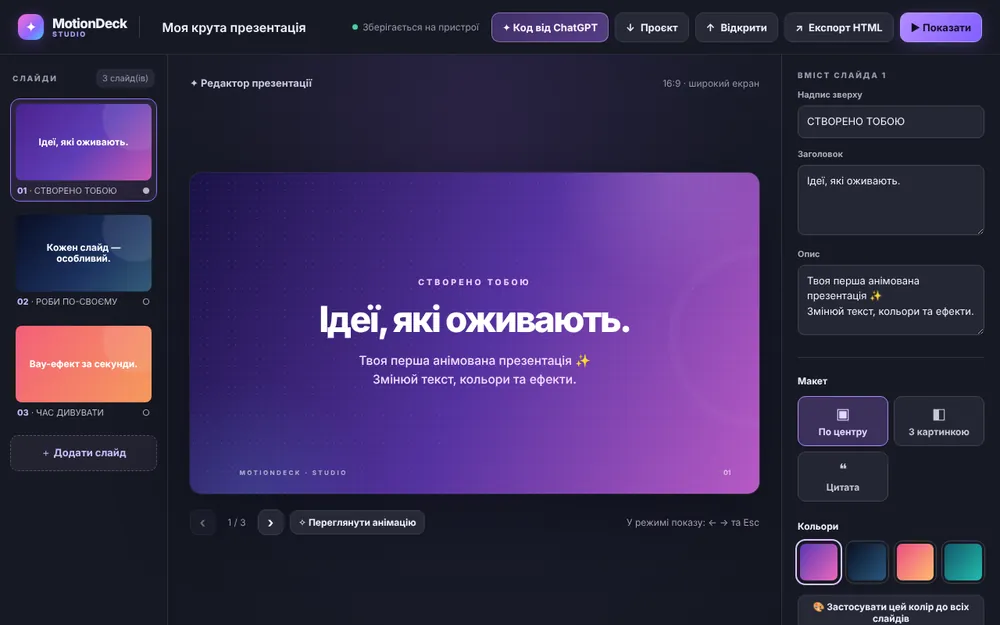
Редактор MotionDeck - ранок, до ≈ 07:40
Перша «Кераміка України» — і перехід до Claude
Перша спроба — у ChatGPT: презентація на 15 слайдів і маршрут картою з чотирьох зупинок (Вінниччина → Київщина → Полтавщина → Прикарпаття). Результат не сподобався: ChatGPT не зрозумів задуму. Тоді — реєстрація в Claude, поки на безкоштовній версії, і нова презентація: карта всіх областей, девʼять регіонів (готова ≈ 07:39). Claude зрозумів, чого хочеться, хоча перші спроби були не без проблем. Саме цю версію ≈ 09:10 передали в ChatGPT, щоб додати пульт.
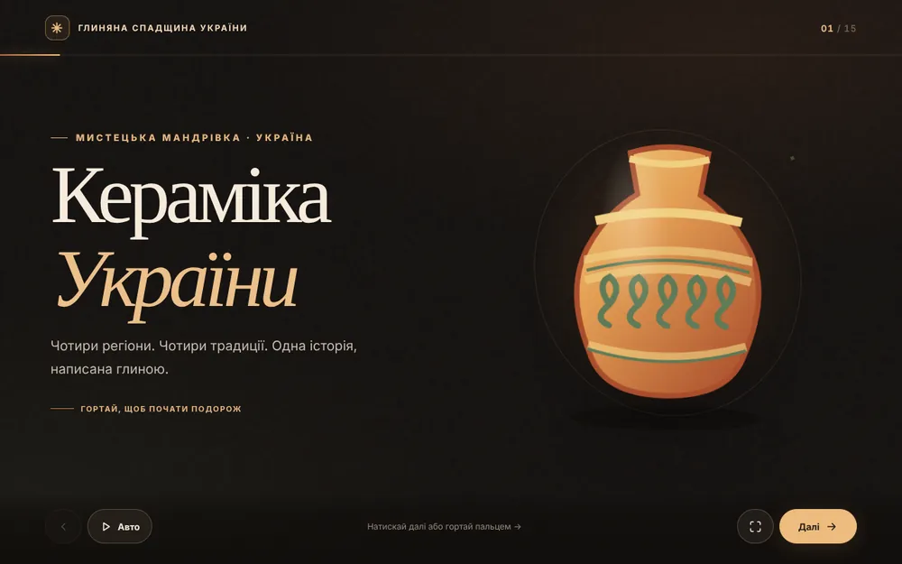
Перша спроба в ChatGPT: 4 регіони, 15 слайдів 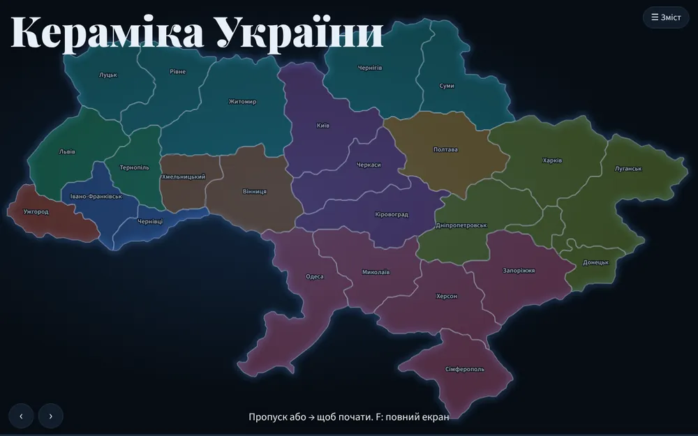
Перша версія з Claude: карта всіх областей, ще без пульта - ранок
Матеріали для гутірки
Фото справжньої кераміки — вази, тарелі, куманці, свічник, — контурна карта областей і приклади оформлення презентацій: з цим працював Claude.
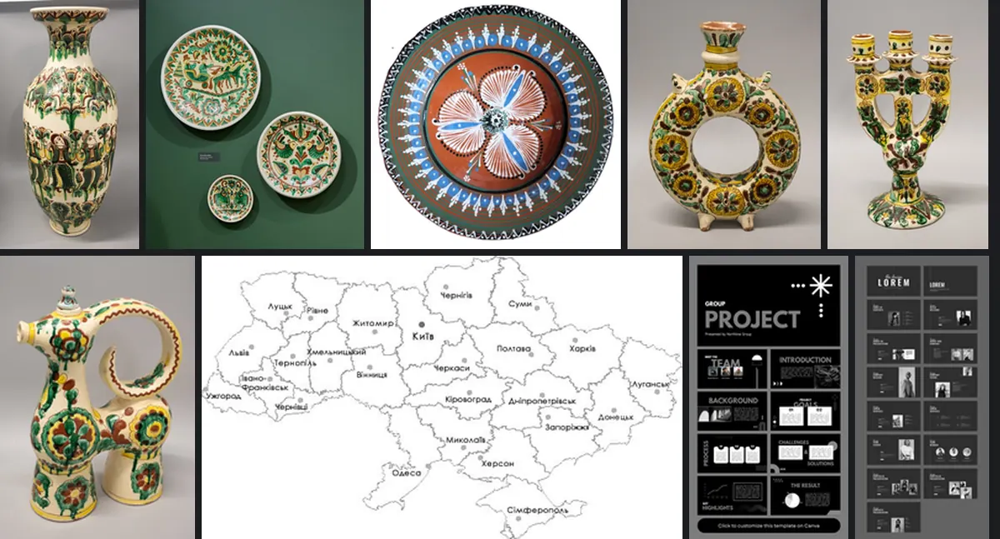
Фото кераміки, карта й приклади оформлення - ≈ 07:50
Ідея ще однієї гутірки: вивіски й логотипи
Окремий чат ChatGPT: за зразком «Кераміки України» спершу сайт «Від ідеї до світла» з конструктором вивіски, потім презентація «Від логотипа до вивіски»: повна (25–30 хв) і коротка (12–15 хв), схеми виробництва, вікторина, нотатки ведучому, пульт з телефона. На сайт ще не додана.
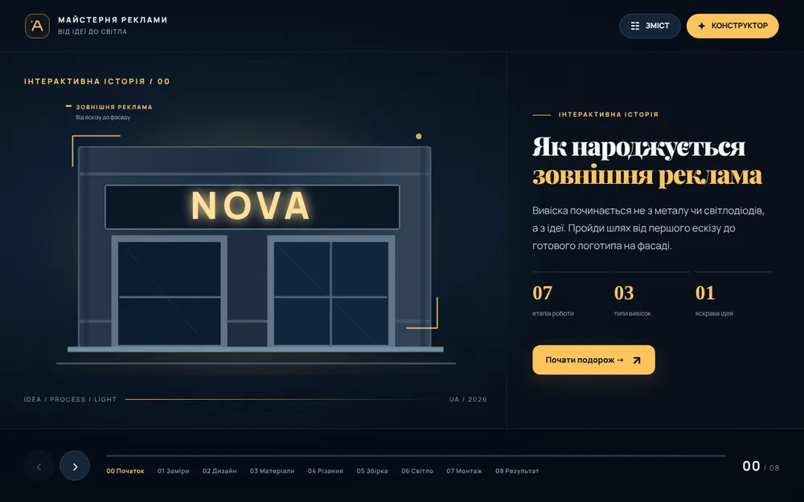
Сайт «Від ідеї до світла» 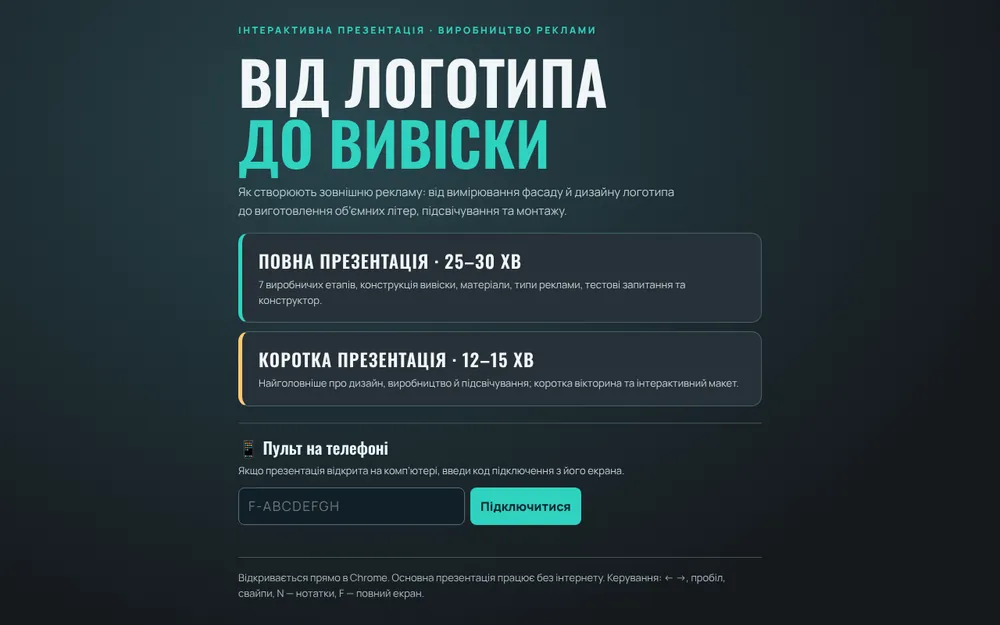
Презентація «Від логотипа до вивіски» - ≈ 09:10
Гутірка для юнацтва
Чат ChatGPT «Керування презентацією телефоном»: відкривати презентацію за посиланням і гортати з телефона, коли показ іде на ноутбуці чи проєкторі (Netlify Drop, QR-код). Презентація стала гутіркою для юнацтва 12–17 років; за вимогами вишколу (24 жовтня, Швеція) — до 20 хвилин. Теми на вибір: скелелазіння, кераміка й зовнішня реклама — обрано кераміку: є власні вироби й готова презентація. Наочно: три піали (після першого випалу; після другого без глазурі; з декором і прозорою глазуруʼю) і гіпсова форма для лиття. Дві версії: повна (45–50 хв) і вишкіл (до 20 хв), плани проведення по хвилинах. План для вишколу треба здати до 20 жовтня 2026 року.
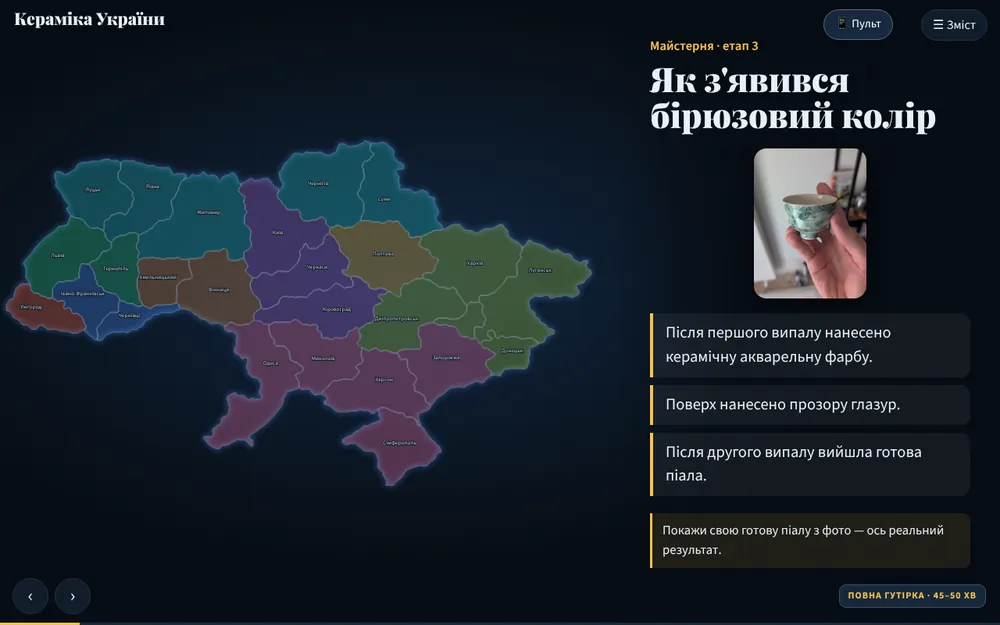
Кнопка «Пульт», позначка версії і фото власної піали - ≈ 12:00–12:30
Дизайн і карта — у Claude
Карта України мала неточності, тож новий дизайн гутірки й виправлену географію робили знову в Claude, ще на безкоштовній версії. ≈ 12:20 зʼявились дві окремі сторінки — «Кераміка України — повна (45–50 хв)» і «вишкіл (20 хв)»; ≈ 12:24 повну версію завантажили, а о 12:28 її вже пробували викласти через Netlify Drop.
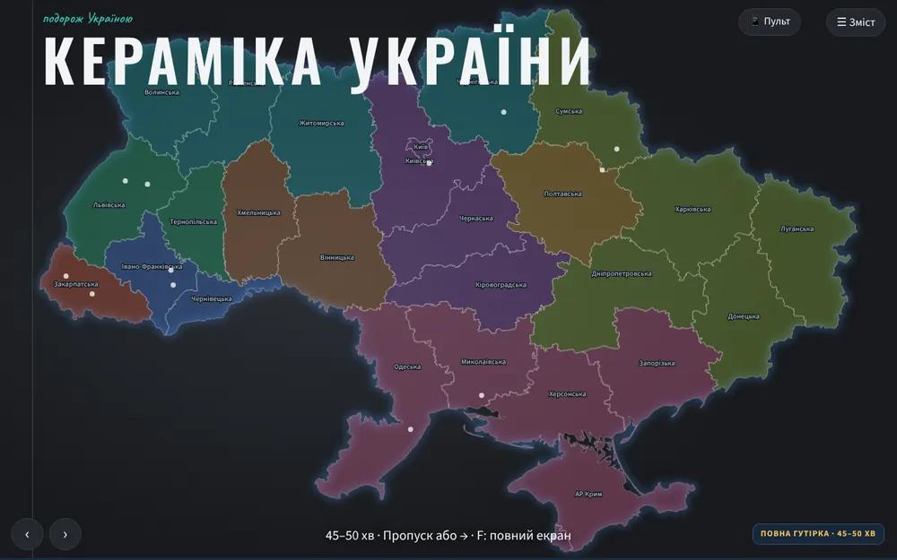
Новий дизайн і виправлена карта - ≈ 12:30–13:35
Перший сайт: дві версії
Стартова сторінка з двома посиланнями — «Повна гутірка · 45–50 хв» і «Вишкіл · до 20 хв», кожна версія у своїй папці, уже в новому дизайні. Архів готували для Netlify Drop.
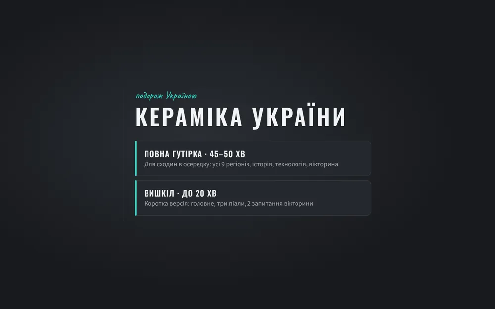
Стартова сторінка першого сайту - ≈ 14:10 і далі
Пульт, що працює
Перший пульт був мукою: довжелезний код, який треба було переписувати вручну, — і він не працював. Була ідея окремого додатка для QR-кодів, але тоді кожну нову гутірку довелося б підлаштовувати. У ChatGPT телефон підключався нестабільно, ще й, схоже, закінчився ліміт Netlify; ≈ 14:10 зʼявився запасний пульт через Wi-Fi з Python-сервером. Далі — один файл для Chrome з обома версіями і, нарешті, підключення за 6-значним кодом. Перевірено на своїх пристроях — працює.
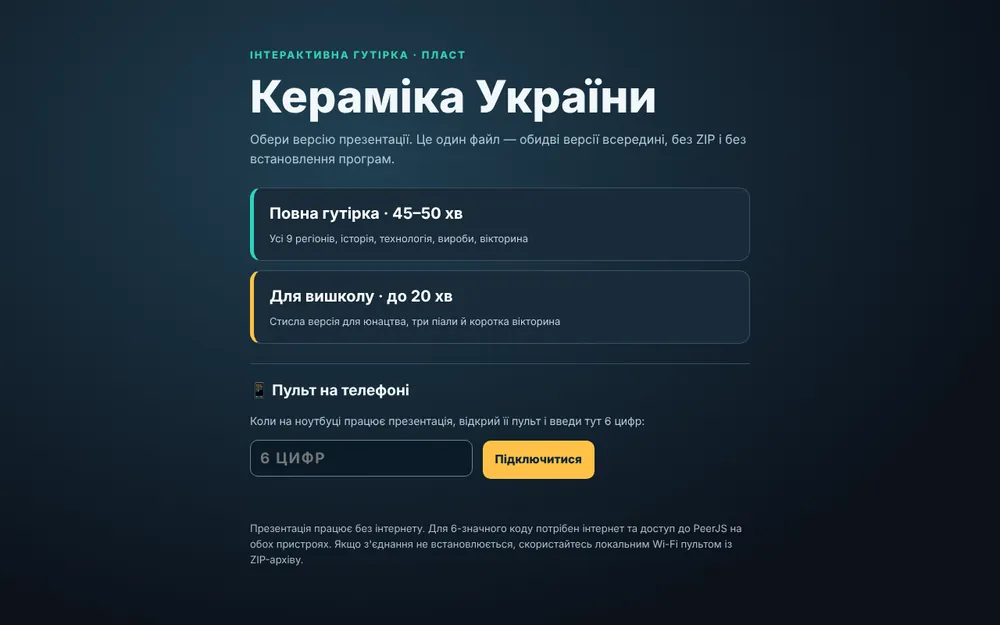
Один файл: вибір версії і пульт за 6 цифрами - ≈ 17:15–17:40
Знову в Claude — уже з підпискою
Розмова в Claude продовжилась на підписці, і першим прийшов файл з пультом за 6 цифрами. За пів години — сайт для Netlify: головна «Бібліотека гутірок» з лілеєю (поки умовною) і «СКОБ!», пошук і фільтри, «Кераміка України» однією карткою з двома версіями, універсальний пульт: один QR-код і код із 6 цифр для всіх гутірок — і старих, і нових, з окремою сторінкою для телефона, яка сама перепідключається. Нова гутірка — це просто нова папка. Сама гутірка — подорож картою України: що таке кераміка, як її роблять, історія по епохах, девʼять регіонів із виробами, запитання до залу й вікторина на карті.
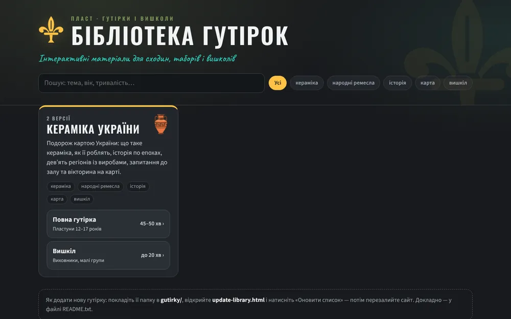
Перша «Бібліотека гутірок» — сайт для Netlify 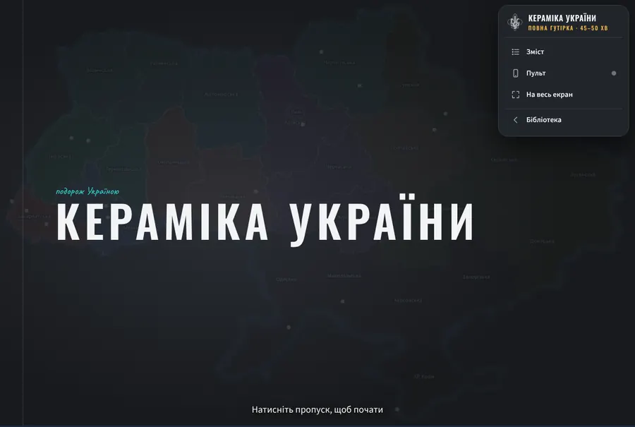
Титульний слайд гутірки «Кераміка України» - ≈ 17:53
Бібліотека за одним посиланням
Щоб не возитися з zip і Netlify, бібліотека стала сторінкою в Claude за одним посиланням. Пульт працював через сам Claude — на телефоні треба було увійти в той самий обліковий запис. Але відкривалась ця сторінка лише всередині Claude.
- ≈ 18:24
Файл для Chrome і пульт на Netlify
Тоді — звичайний файл gutirky.html: завантажити, двічі клацнути — і він відкривається в Chrome без Claude. Сторінку пульта для телефона виклали окремо на Netlify.
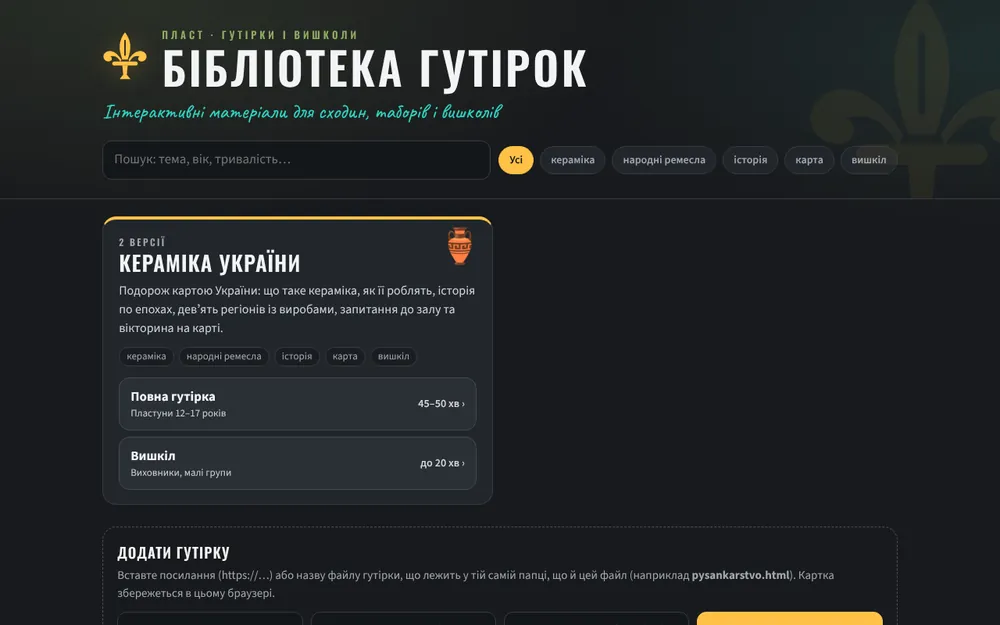
Бібліотека одним файлом для Chrome - ≈ 18:44
Netlify підводить
Пульт на Netlify не підключався — «Не виходить підключитись», а безкоштовні кредити Netlify закінчувалися.
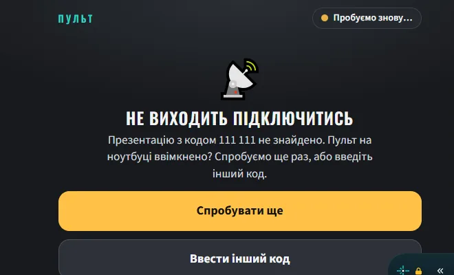
Пульт на Netlify, 18:44 - ≈ 18:47
Сторінка «Завантаження гутірок»
Дві кнопки — gutirky.html і пульт для Netlify — та покрокова інструкція «Один раз» і «Щоразу».
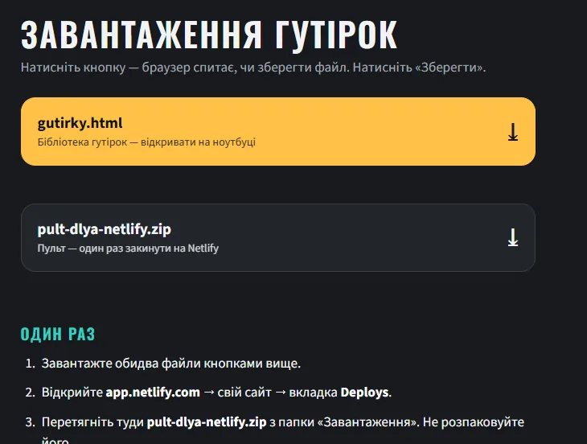
Сторінка «Завантаження гутірок» - ≈ 19:24–20:10
GitHub: обліковий запис і сайт
Щоб не залежати від Netlify і файлів: ≈ 19:24–19:48 — реєстрація на GitHub (обліковий запис gutirky-fi), ≈ 19:59 — сховище gutirky-fi.github.io, о 20:10 — перша версія сайту. Усе за одним посиланням, а оновлення приходять самі. Сайт прихований від пошуковиків.
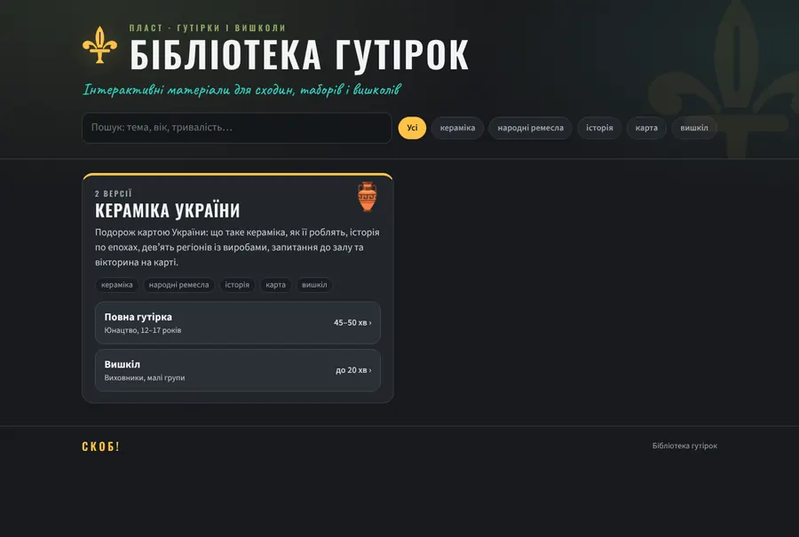
Перша версія головної сторінки 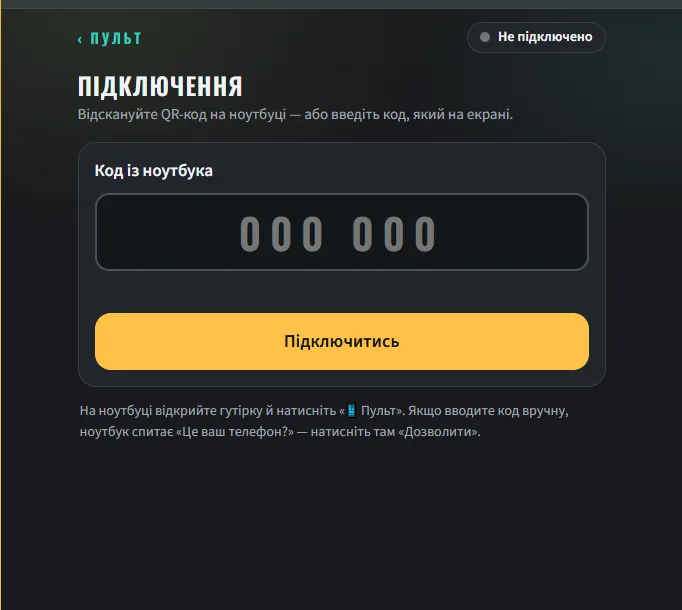
Сторінка пульта на GitHub - 20:19–20:30
Зручніше вести гутірку
Кнопка «Пульт» на головній лишилась тільки на телефоні. Меню гутірки зібране в одному місці, у правому верхньому куті. Прибрано стрілки й гортання біля країв, щоб випадково не перегортати слайди. ≈ 20:29 оновлено й файл gutirky.html для роботи без інтернету.
- ≈ 20:45–22:16
Пошук дизайну
На полотні «Головна бібліотеки: варіанти» один за одним: ≈ 20:45 — А «Графіт», Б «Нічна ватра», В «Відзнаки»; ≈ 21:02–21:09 — каталог вмілостей у кожному стилі; ≈ 21:16 — поєднання А + Б + В у темній і світлій темі. О 21:26 прийшов логотип Пласту у Фінляндії — і ≈ 21:50 зʼявився Г; ≈ 22:02 — Д1, Д2, Д3 з логотипом; ≈ 22:06 — Е «Північний хрест», зроблений з нуля. Умовну лілею замінено справжнім логотипом. Обрано Д1. Усі 17 макетів можна відкрити в «Ранніх версіях».
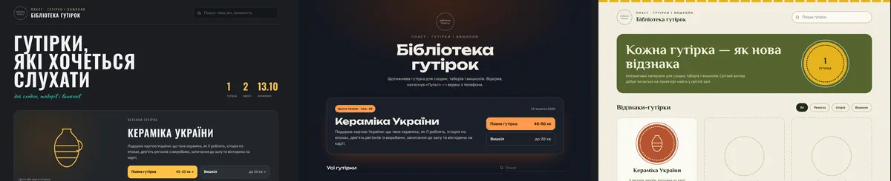
А «Графіт», Б «Нічна ватра», В «Відзнаки» 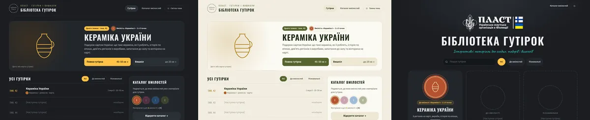
А + Б + В (темна і світла) та Г 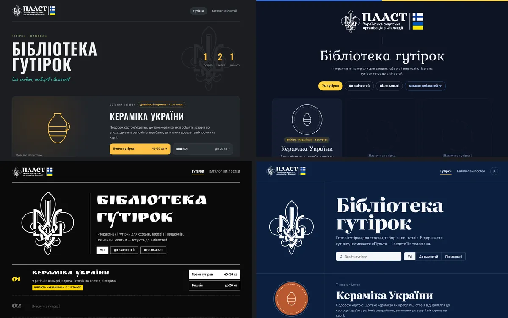
Д1, Д2, Д3 і Е «Північний хрест» - 22:18–22:54
Робоча копія і правки
Перед тим як ставити на сайт, зроблено копію в новому дизайні, по якій можна клацати. Правки: «Пластове юнацтво» і «для сходин гуртка і таборів» замість «вишколів»; без обіцянок щотижневих гутірок; карта України з гутірки в блоці «Остання гутірка»; рівно по центру «СКОБ!» унизу; меню, зміст і вікно пульта в гутірці — у тому самому стилі.
- 22:55
Дизайн Д1 на сайті
Новий дизайн із логотипом Пласту у Фінляндії опубліковано.
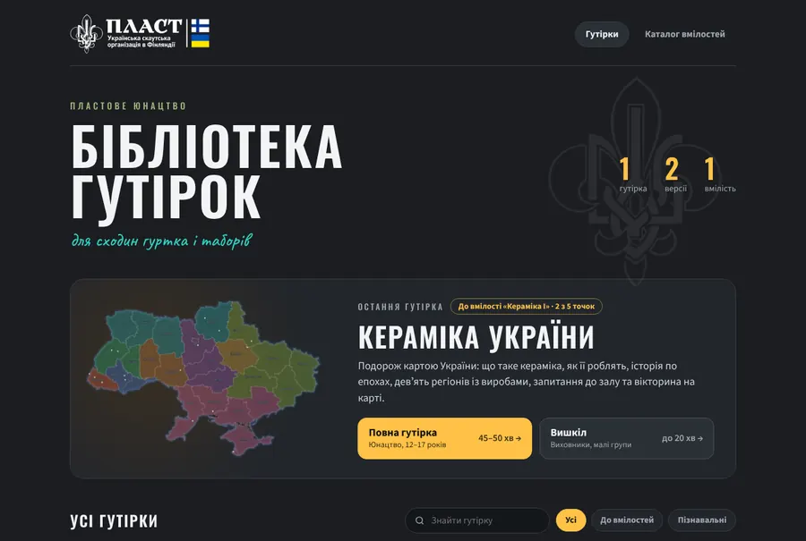
Головна сторінка в дизайні Д1 - 22:59–23:02
Значок вкладки
О 22:58 власник сфотографував вкладки: у Вікіпедії й Google є значки, а в сайту — глобус. Тепер там емблема Пласту.
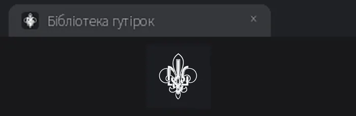
Значок у вкладці (збільшено) - 22:55–23:43
Каталог вмілостей
О 22:55 у каталозі було 14 вмілостей для прикладу. ≈ 23:21 — копія з усіма 448 назвами з бібліотеки вмілостей Пласту (plast.global), ще без нашивок. О 23:43 — 162 вмілості з каталогу Пласту у Фінляндії зі справжніми нашивками; кожен рівень веде на свою сторінку на порталі Пласту у Фінляндії.
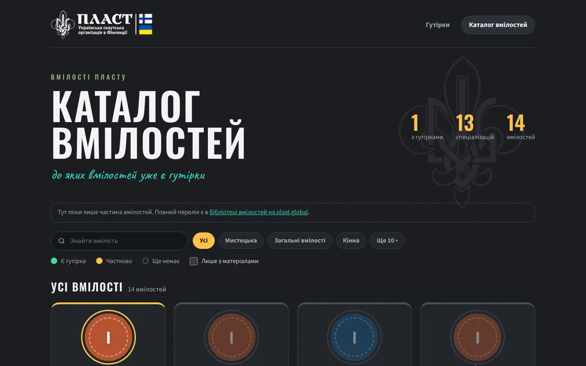
22:55 — 14 вмілостей для прикладу 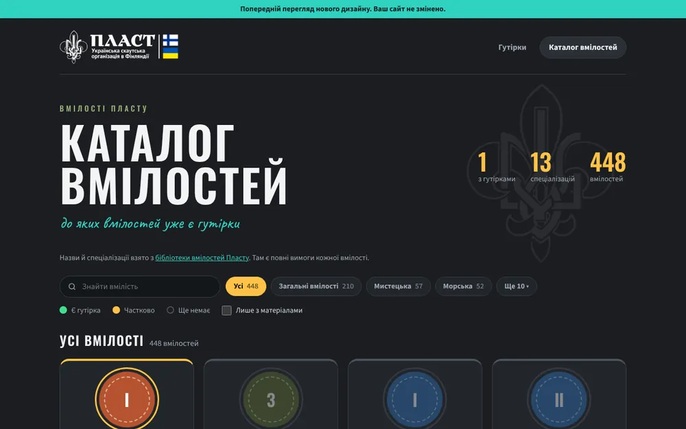
≈ 23:21 — 448 вмілостей, ще без нашивок - 23:52
Нашивки
Чорно-білі нашивки (вмілості Пласту в Польщі) стоять на світлій підкладці, щоб їх було видно на темному тлі. «Настільні ігри» — без білого квадрата.
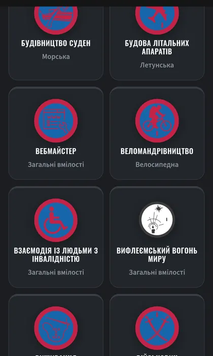
Каталог з нашивками на телефоні


14.10.2026
- 00:05–00:16
Рішення: нашивки не перефарбовувати
Офіційні нашивки лишаються такими, як на plast.global і порталі Пласту у Фінляндії, щоб на всіх сайтах вони збігались. Щоб вирішити, о 00:05 зʼявилась окрема сторінка з 24 нестандартними нашивками; о 00:16 її прибрали.
- 00:25–00:31
Памʼять проєкту
Усі робочі файли й повний опис проєкту збережено на GitHub, щоб продовжувати роботу з будь-якої нової розмови. Щороку 1 вересня каталог вмілостей перевірятиметься автоматично.
- 00:45
Сторінка історії
Ця сторінка: хронологія створення і розвитку сайту.
- 00:50
Чорно-білі нашивки — у кінець
У каталозі й у кожній спеціалізації спершу йдуть вмілості з гутірками, далі — з кольоровими нашивками, потім «Настільні ігри» і «Сигналізація-комунікація», а чорно-білі та без нашивки — в самому кінці.
- ≈ 00:52–01:50
Історія доповнюється
Власник надіслав підсумки чатів ChatGPT, три пакети старих файлів і розповів, як усе почалося. Сюди додано все, що вдалося відкопати: вступ «Як усе почалося», ранок 13 жовтня, усі версії гутірки й сайту, 17 макетів дизайну — разом 29 позицій у «Ранніх версіях».
- ≈ 02:14–03:40
Сайт на будь-якому екрані
Сайт перевірено на 20 розмірах екранів — від телефона 320 px до монітора 4K, стоячи й лежачи, на планшетах, ноутбуках і моніторах. Гутірка: на малих телефонах текст більше не налазить на заголовок і карту; на телефоні лежачи вміщається, а якщо тексту забагато — панель гортається, і новий пункт сам виїжджає на видне місце; на великих моніторах текст більший. На сенсорних екранах дрібні кнопки отримали більшу зону дотику, а в каталозі на телефоні лежачи нашивка в деталях менша. На ноутбуці все виглядає, як і було.
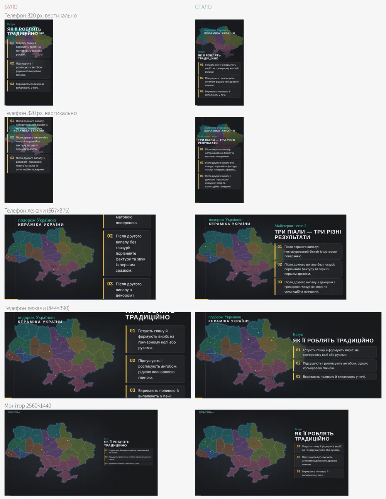
Було / стало: телефон, телефон лежачи, монітор - ≈ 03:40–04:10
Гортання дотиком
На телефоні гортати свайпом було незручно. Тепер на будь-якому сенсорному екрані дотик лівої третини — назад, решти екрана — далі; свайп теж лишився. Області на карті у вікторині й надалі відповідають на дотик, а на огляді регіонів область можна обрати посередині екрана. На ноутбуці мишкою все, як було.
- ≈ 04:15–05:00
Гутірка за вимогами вмілості
Проба нового підходу: з каталогу навмання обрано вмілість «Будова літальних апаратів І», і на кожну з її п’яти вимог зроблено розділ гутірки з малюнками, практикою й запитанням. До неї — вікторина з 15 запитань (і файл для Kahoot), сторінка «Вивчай сам» для юнаків і «Перевір себе». Прогрес юнака зберігається лише на його телефоні й лише за згодою. Поки що це проба — на сайт піде після погодження.
- ≈ 05:10–05:30
Своя гра «Потужний СКОБ!»
Замість Kahoot — своя гра на нашому сайті. Запитання на екрані, юнаки відповідають зі своїх телефонів: сканують QR-код або вводять 6 цифр і пишуть ім’я. Відповіді — С, К, О, Б (від пластового «Сильно, Красно, Обережно, Бистро»), за швидку правильну відповідь — більше балів, після кожного запитання — лідери, наприкінці — п’єдестал. Без реєстрації, нічого не зберігається. Можна грати й без телефонів — на екрані.
- ≈ 05:30–05:50
Нові малюнки до гутірки про літальні апарати
Схематичні малюнки замінено на справжні ілюстрації: навчальний літак згори й збоку (з шасі), вісім видів ЛА, профіль крила за справжньою формою NACA 4415, підйомна сила з тиском «−» і «+», п’ять схем на прикладі справжніх літаків. Тангаж, крен і рискання показує рухомий 3D-літачок — рулі відхиляються, а літак обертається. Можна ввімкнути фото справжніх літаків з Вікісховища.
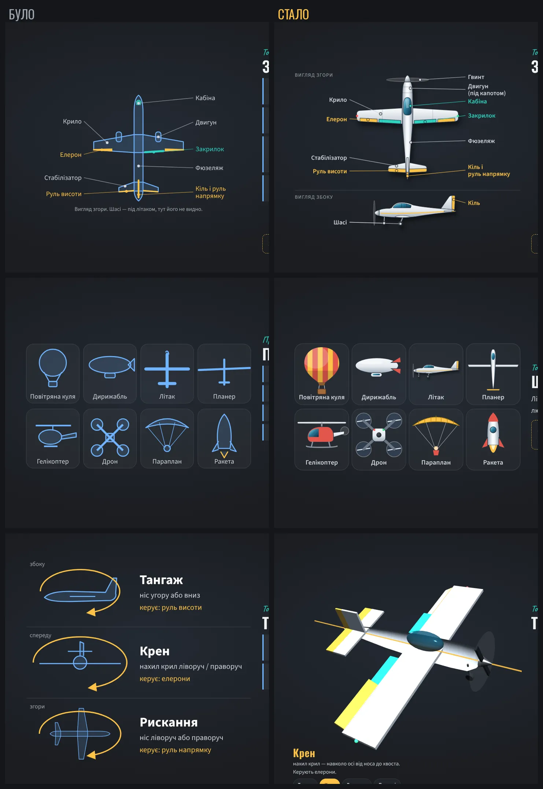
Було / стало: частини літака, види ЛА, тангаж-крен-рискання - ≈ 06:07–06:50
Неоновий стиль
Власник надіслав п’ять неонових картинок (зроблених в іншому ШІ) як приклад стилю. Усі малюнки гутірки перемальовано в такому стилі: темно-синій літак зі світним блакитним контуром, золоті рулі, бірюзові закрилки й кабіна, підписи в «таблетках». Заодно виправлено неточності прикладу (підпис «Закрилок» показував на елерон, не було шасі). 3D-літачок теж став неоновим: креслярська сітка внизу, світні контури, рулі рухаються.
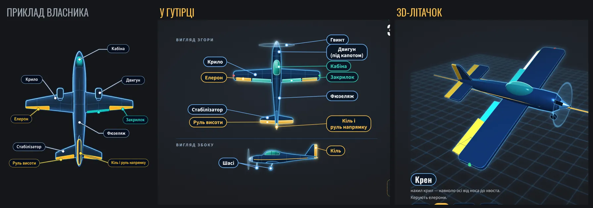
Приклад власника — у гутірці — 3D-літачок - ≈ 06:44–07:40
Власник гортає гутірку і виправляє
Перший прохід власника по слайдах. Титульний слайд перероблено: ліворуч назва, праворуч неоновий 3D-літак, що повільно пролітає по колу, без смуги прокрутки. Підписи на малюнках вишикувано в акуратні колонки з ламаними виносками. Для «Що робить літак керованим» — окремий малюнок зі світними рулями. Повітря на малюнках тепер тече, а смужка паперу піднімається, коли дмуть. Перемикач фото прибрано. «Вгадай схему» стала справжньою грою (5 силуетів). У «Потужному СКОБі» — коротка адреса gutirky-fi.github.io/skob, перевірка імен (українські імена — одразу, інші — після ✓ ведучого, лайка — ні), хрестик біля кожного імені; правильна відповідь — гра йде далі сама, неправильна — зупиняється на поясненні. Запитання й відповіді щоразу перемішуються.
- 07:50
Гутірка — виховникові, матеріали — юнакам
Щоб юнаки не бачили гутірку наперед, для них зроблено окрему сторінку: там лише «Вивчай сам» і «Перевір себе», без презентації, плану й гри. Виховник дає її після гутірки: QR-код на останньому слайді або посилання зі стартової сторінки («Для юнаків»). «План гутірки» тепер можна роздрукувати або зберегти в PDF однією кнопкою.
- 08:29–09:20
Один сайт — кілька входів
Власник заплутався, як має виглядати сайт далі. Разом склали задум: головна з входами «Для всіх» (підказки, співаник, цікаве), «Юнацтво» (вмілості з нашивками, «Мої вмілості», матеріали для самостійного навчання) і «Виховники» (за кодом: гутірки, плани, гра). Виховник бачить усе. Зроблено клікабельний макет для перегляду; на справжній сайт ще не ставили.
- 10:17
«Кераміка І» — для здачі вмілості
Друга версія «Кераміки», точно за п’ятьма вимогами вмілості: історія, техніки формотворення, шість видів кераміки, музей і три вироби. Як у «Літаках»: малюнки (теплий «пічний» стиль), 3D-ваза на гончарному крузі, запитання після кожної вимоги, гра «Вгадай вид кераміки», «Потужний СКОБ!», план для друку й сторінка для юнаків. Стара «Кераміка України» лишається історичною подорожжю картою.


15.10.2026
- ≈ 14:56–15:40
«Потужний СКОБ!» — гра для всіх
Власник хоче показати гру людям із порталу Пласту у Фінляндії, а може, й зробити її доступною всім. Тому зроблено окрему сторінку-конструктор: будь-хто складає свою вікторину (вручну, списком або з допомогою ШІ за готовою підказкою), натискає «Грати», а гравці заходять з телефонів за QR-кодом. Ігри зберігаються лише на пристрої автора, ними можна поділитися посиланням або файлом. Ні сервера, ні реєстрації. Поки це проба, на головний сайт не ставили.
- ≈ 16:44
Вітрина: усе на одній сторінці
Щоб показувати іншим, зроблено одну сторінку з усіма макетами: що вже працює на сайті, нові гутірки «Будова літальних апаратів І» і «Кераміка І», сторінка для юнаків, гра «Потужний СКОБ!» та ідея сайту з кількома входами. Кожне посилання відкривається в новій вкладці, тож вітрина завжди лишається під рукою.
19.10.2026
- ≈ 00:30–01:30
Пластові кольори
Кожен колір на сайті тепер означає, для кого це — як кольори уладів у Пласті: новацтво жовте, юнацтво малинове, старші пластуни й виховники зелені, сеньйори бронзові, а «Для всіх» — усі кольори разом. Каталог вмілостей юнацтва — малиновий: смужка над нашивкою показує, скільки вимог уже покриває гутірка. Обидві «Кераміки» тепер одного глиняного кольору. Поки що — у макеті, на сайт піде після «ставимо».
- ≈ 01:30
«Нові гутірки» гортаються самі
У макеті сайту з кількома входами виховники тепер бачать лічильники гутірок і велику рамку з новими гутірками: кожні вісім секунд вона показує наступну, а щойно виховник сам вибере гутірку — зупиняється.
- ≈ 02:30
Повний матеріал і практика
Тепер видно різницю між тим, що дає гутірка, і тим, що юнак робить сам. «Кераміка І» — «повний матеріал + 2 практики», а не «3 з 5 точок». Смужка над нашивкою ділиться на точки: суцільні — є в гутірці, у рисочку — практика. На сторінці юнака біля практичних точок написано «зробиш сам», а кнопка — «Я це вже зробив».
- ≈ 02:40
Вивчай, перевір, зроби сам
Юнаки тепер бачать, скільки точок вмілості вивчити, а скільки зробити власноруч: «3 точки вивчиш тут, 2 — зробиш власноруч». У «Кераміки І» з'явився третій крок — «Зроби сам», а смужка прогресу показує практичні точки в рисочку, поки юнак їх не зробить.
- ≈ 03:00–07:10
Нове обличчя «Кераміки І»
Гутірка отримала свій стиль «Гончарня»: тепла майстерня, плитки-проби, що вкриваються глазур'ю, великий факт «26 000 років», плавні переходи між слайдами і зручний зміст. Малюнки замінили картинки, які власник згенерував у ChatGPT. Факти перевірено й звірено з документом вимог. Поки що — у макеті.
- ≈ 07:30
Сайт з кількома входами
На сайті тепер головна з трьома входами: «Для всіх» (підказки, співаник, цікаве про Пласт), «Юнацтво» (вмілості, «Мої вмілості») і «Виховники» (гутірки й каталог, вхід за кодом). Кольори — як у Пласті. Бібліотека з «Керамікою України» переїхала на /biblioteka/, старі посилання ведуть туди самі. Нові гутірки додамо після останньої перевірки. Попередній сайт збережено — його можна повернути.
- ≈ 09:15
Нові гутірки на сайті
«Будова літальних апаратів І» (стиль «Креслення»: калька, маршрут польоту, 3D-літачок іде за пунктами) і «Кераміка І» (стиль «Гончарня»: полиця з виробами, картинки до кожної техніки) тепер на сайті — у «Виховниках» і в «Юнацтві» («Вивчай сам», «Перевір себе»). Перед публікацією зміст звірено з бланками вимог і виправлено кілька неточностей.
21.10.2026
- ≈ 10:45
Нові QR-коди з лілеєю
Усі QR-коди на сайті отримали власний вигляд: темне тло, круглі крапки, зелені кути й пластова лілея посередині (пульт ведучого, «Вивчай сам»). У грі «Потужний СКОБ!» — золоті кути й кольорові літери С К О Б. Вікно пульта на ноутбуці стало коротшим.
- ≈ 12:30
Нова «Кераміка України» на сайті
Гутірка для вишколу (до 20 хв) тепер у бібліотеці: карта з 9 краями, точки й фото на весь екран, майстерня «крапля води», вікторина на карті й бонусна гра «Потужний СКОБ!». Підказки ведучому з позначками ❓ 🗣 ✋ і часом «закінчити до». Новий пульт на телефоні: міні-карта, фото, пауза.
- ≈ 14:55
«Потужний СКОБ!» з пульта
Грою тепер можна керувати з телефона-пульта: запросити гравців, почати, показати відповідь, перейти далі. Без телефонів у учасників ведучий сам тикає відповідь, яку назвали вголос. Літери С К О Б у QR-коді гри тепер такі самі, як у логотипі.
- ≈ 16:45
Матеріали до друку для вишколу
До «Кераміки України» додано сторінку з матеріалами до друку: план гутірки (PDF і Word), аркуш учасника з картою, фото й словничком гончаря, шпаргалка ведучому з відповідями. Кнопка — у «Виховниках», у картці гутірки.
- ≈ 18:20
Усі роздруківки в одному стилі
Друковані матеріали тепер мають спільний вигляд: шапка з назвою й пластовою лілеєю, колір гутірки, внизу «Пласт у Фінляндії». У «Кераміки України» — план, аркуш учасника, шпаргалка й нові таблички до досліду «Крапля води»; плани «Кераміки І» і «Будови ЛА І» друкуються так само.
22.10.2026
- ≈ 15:45
Усі плани — в одному дизайні
Обрано третій дизайн друкованих матеріалів. Плани «Кераміки І» і «Будови літальних апаратів І» тепер є готовими PDF у тому самому стилі: смужка часу, чек-лист, частини з номерами, перевірки виділено. Номери завдань — без великих кружечків.
- ≈ 17:05
Смужка «Чернетка»
Вгорі сайту з'явилася тимчасова смужка: «Чернетка. Сайт поки не відкритий для всіх і може бути перероблений.» — щоб кожен, хто бачить сайт, розумів, що це робочий особистий проєкт.
- ≈ 18:45
Репетиція з пультом
Нова сторінка «Репетиція»: гутірка й пульт на одному телефоні, без проектора й QR-коду — щоб пройти заняття вдома. Підказки на пульті стали зручнішими: що на екрані, готові речення, запитання й дії виділено, поточний пункт сам підтягується.
- ≈ 19:10
Пульт із запасними каналами
Безкоштовний сервер, через який пульт знаходив ноутбук, перестав відповідати. Тепер пульт з'єднується одразу кількома шляхами через різні сервери й сам бере той, що працює, — з'єднання стало значно надійнішим.
23.10.2026
- ≈ 05:55
Гутірка без інтернету
«Кераміку України» тепер можна завантажити одним файлом і відкрити без інтернету — з флешки, на іншому ноутбуці чи телефоні. Кнопка — на сторінці «Матеріали до друку».
29.10.2026
- ≈ 23:55
Бінго на сайті
«Пластове бінго» з проби перенесено на сайт: на головній у розділі «Для всіх» з’явилися «Ігри». Ведучий тягне кульки на великому екрані, гравці грають з телефонів або паперових карток — числа 1–40 або слова з «Кераміки України».
- ≈ 00:05
Бінго на сайті
«Пластове бінго» тепер на сайті: на головній у розділі «Для всіх» з’явилися «Ігри». Ведучий тягне кульки на великому екрані, гравці грають з телефонів або паперових карток.
- ≈ 01:20
Варіанти бінго
У бінго тепер п’ять варіантів: числа 1–40, швидке 3×3 для менших, класичне 5×5 (Б-І-Н-Г-О), лото 1–90 і слова з «Кераміки України». І можна вибрати, як виграти: ряд, чотири кути чи вся картка.
03.11.2026
- ≈ 06:40
Ігри на сайті
На сайті тепер чотири ігри в одному стилі: «Інтелектуальний змаг», «Пластове бінго», «Потужний СКОБ!» і «Швидке опитування». Порожні ігри — у «Для всіх → Ігри» (грати або скласти свою). У «Виховниках» з’явилася вкладка «Ігри» з підготовленими іграми — питання з відповідями бачать лише виховники. У QR-кодах ігор — знак гри.
- ≈ 07:30
Інструмент «Хто?»
У «Виховниках → Ігри → Для виховника» з’явився інструмент «Хто?»: рулетка «хто наступний» (без повторів, поки не вибере всіх) і чесний поділ гуртка на групи чи пари на великому екрані. Імена зберігаються лише на комп’ютері виховника.
04.11.2026
- ≈ 11:10
Ігри — оновлення на сайті
Усі ігри (Змаг, Бінго, «Потужний СКОБ!») і Швидке опитування — однією родиною: однакові логотипи, шапки, кольори й пульти з телефона за зразком Змагу, вікно «Ведучому», «Репетиція» з тестовими гравцями, памʼятка ведучому й друковані матеріали з логотипом гри. СКОБ — одразу екран гри, як у Змагу.
08.11.2026
- ≈ 18:20
Задум «Документація гуртка»
Власник скинув велике завдання про документацію гуртка. Вирішили не робити купу однакових бланків, а одну живу книгу: діловоди з телефона вносять записи через сайт, усе зберігається в таблиці виховника, а звіти для друку складаються з даних. У кожного документа два варіанти: відкритий бланк для всіх (друк, PDF, Word) і «заповнити й подати» за кодом. Захист — код гуртка й імена без прізвищ. Нічого ще не збудовано.
- ≈ 19:30
Документація: дослідження
Перевірили пластові джерела для документації гуртка: 46 документів у каталозі з посиланнями. Головне — Правильник УПЮ: кожна посада в гуртку веде свою книгу, тож наша книга буде «аркуш на посаду». Зібрали 13 питань до проводу Пласту у Фінляндії (проби, внески, згоди батьків, дані).
- ≈ 20:10
Документація: книга гуртка
Готова таблиця-книга гуртка для Google Таблиць: 21 аркуш (учасники, відвідуваність, проби, вмілості, відзначки й запас нашивок, каса, майно, протоколи, завдання та інші). Сама рахує присутність, відзнаки, залишок каси й прострочені завдання. Є порожній шаблон і приклад з вигаданим гуртком, приймач для сайту з кодом гуртка й покрокова інструкція.
- ≈ 21:15
Документація: перші сторінки
Проби розділу «Документи гуртка»: картки посад з обов'язками за Правильником, бланк відвідуваності (друк, PDF, Word) з поданням у книгу за кодом, «Вхід виховника» з формою «Після сходин» — одне «Надіслати» записує сходини, присутність і внески. Кольори документів — за уладом.
- ≈ 21:50
Документація: сторінка «Книга гуртка»
Проба сторінки-пояснення: що таке книга гуртка, як запис доходить від діловода до Таблиці виховника, 23 аркуші за посадами, рік книги до «Нового року», чого в книзі немає. Даних на сторінці немає — лише опис.
- ≈ 22:20
Документація: кінець року
Власник надіслав три Правильники (УПЮ ч. I, ч. II, Кадри Виховників). Перевірили: письмовий звіт у Правильнику лише в гурткового (п. 3.4.1), Гурткова рада — раз на рік (п. 3.2.1), про передачу посад і звіт кожного діловода нічого немає. Власник: те, що чув на вишколі, не беремо до уваги. Проба сторінки «Кінець року» — лише за Правильником, 2 питання до проводу.
- ≈ 22:45
Документація: одна заготовка для всіх форм
Зроблено одну заготовку документа: бланк A4 (друк, PDF, Word, заповнити просто на сторінці) і форма «Заповнити й подати» в книгу гуртка за кодом. Новий документ тепер — лише короткий опис полів. Перша сторінка за заготовкою — «Сходини» гурткового (проба).
- ≈ 22:55
Документація: вмілість на сходинах
На прохання власника в запис сходин додано необов'язкову графу «Проба / вмілість»: до якої вмілості чи точки проби була гутірка. Є в книзі гуртка, у бланку, у формі «Сходини» і в «Після сходин» виховника.
- ≈ 23:10
Документація: захист від помилок
Тепер юнак може сам виправити чи скасувати щойно надісланий запис. Виховник бачить усе нове з сайту на сторінці «Що нового» (хто, коли, що), а позначка «Перевірено виховником» закриває рядок від змін із сайту. У полях з'явився пошук гутірок, ігор і вмілостей бібліотеки.
09.11.2026
- ≈ 00:40
Документація: затвердження і два коди
Одні сходини — один запис: якщо дату вже записано, юнак бачить це й виправляє той самий запис, дублів немає. Виховник затверджує записи з телефона в «Що нового» (лічильник, повний запис, кнопка «Затвердити»); затверджене ніхто інший не змінить, у книзі воно зелене. Два коди: короткий для юнаків (лише записувати) і власний для виховника.
- 01:00
Документи: Протокол, Каса, Майно
Три нові проби розділу «Документи». Протокол — бланк на сторінку A4 стоячи; Каса — кілька рядків за раз (внески всім учасникам одним натиском); Майно — одна річ, один рядок, з підказкою речей, які вже є в книзі.
- 01:30
Каса: точність
Кожен платіж — окремий рядок. Під датою видно все, що вже записано за день, з підсумком; будь-який незатверджений рядок можна виправити чи скасувати. Сайт попереджає про подвійний запис, а нові назви полів — простіші. У книзі — окремий стовпець «Як платили».
- 02:00
Внески: хто сплатив усе
Виховник вписує в книгу, які внески треба платити. Кожен платіж прив'язаний до внеску, і сайт показує: «Мирося — сплачено 10 з 20, бракує 10» або «✓ сплачено повністю», а також таблицю всіх. Борги не губляться й у Новий рік.
- ≈ 03:00
Каса: звірка
Внесок отримує ✓ лише після перевірки виховника. На сторінці каси — «Де зараз гроші» (на рахунку, готівкою, разом) і «Що є доказом». У «Вході виховника» нова плитка «Перевірка каси»: «✓ є в банку / гроші є / є чек» або «✗ немає», звірка раз на місяць (книга сама знає, скільки мало бути) і «Здали готівку на рахунок». Новий аркуш книги «Звірки».
- ≈ 03:30
Фото чека
У касі біля видатку — кнопка «📷 Фото чека»: телефон стискає фото, і воно лягає в папку «Чеки гуртка» на Диску виховника, а в книгу — посилання. Номер чека Ч-1, Ч-2… сайт підставляє сам і попереджає про повтор. Додати фото можна й пізніше в «Уже в касі». У «Перевірці каси» — «📷 Подивитись чек».
- ≈ 04:40
Каса: борги й повернення
Купили для гуртка за свої — «Чим платили: свої гроші» і хто заплатив; гурток бачить, кому винен. «Повернули» — у скарбника (каса) і виховника (Перевірка каси), лише якщо є фото чека. Повернули трохи більше чи менше — сайт питає: заокруглення чи борг лишається. Хто винен гуртку — «повернення боргу» з підказкою «✓ розраховано». «За що» тепер окремо для надходження й видатку. Новий рік переносить борги по людях.
- ≈ 05:20
Каса: залік боргу й внеску
Борг і внесок зараховуються без грошей. Гурток винен Остапу — «У внесок», Остап доплачує менше. Мирося винна гуртку — бере внесок разом із боргом, зайве сайт зараховує сам. Переплатили внесок — «У борг гуртка», потім «Повернули» або в наступний внесок. Виховник може «Списати» борг. На Новий рік переплата не пропадає — переходить боргом гуртка.
- ≈ 05:45
Каса: ще випадки
Гурток купив комусь (сорочка, табір наперед), а він поверне — видаток «за учасника (поверне)»: це позичка, не видаток року. Платежі за внесок, який перейменували чи видалили, не губляться: сайт попереджає, а Новий рік їх зараховує. Якщо за книгою готівки чи рахунку менше нуля — попередження.
- ≈ 05:10
Каса: обережне «Списати»
Списати борг може лише виховник, і лише з причиною (подарунок гуртку, дрібниця до 1 €, вибув, рішення гурткової ради, інше з поясненням). Понад 10 € потрібна підстава: протокол чи хто погодив. Перед підтвердженням сайт пояснює, що станеться. Якщо борг тим часом змінився, не списує. Причина лягає в книгу.
- ≈ 05:20
Каса: витяг і нагадування
У касі нова картка «Витяг і нагадування». Витяг людини: вибрати ім'я — внески (треба, сплачено, бракує, ✓ чи ⏳), свої гроші, повернення, позички й підсумок «винен гуртку / гурток винен / ✓ розраховано»; друк, PDF, «Поділитися». «Хто винен» — список від найбільшого, з терміном і «прострочено»; «Нагадати» дає готовий текст юнакові чи батькам. «Оголошення для всіх» — про внесок без імен і боргів. Сайт сам нічого не надсилає. Проба: https://gutirky-fi.github.io/proba/dokumenty/kasa/?demo#podaty (1234).
- ≈ 06:50
Документація гуртка: решта форм (етап 3.3)
Готові проби ще семи документів: План праці, Завдання, Проби, Вмілості, Відзначки, Замовлення нашивок, Мандрівки й заходи (з посиланням на хроніку). У кожного — бланк для друку, PDF чи Word і «Заповнити й подати» за кодом гуртка. Одна подія — один рядок у книзі: якщо запис уже є, форма покаже його й оновить, а не додасть дубль; затверджене виховником — закрите. У «Пробах» поле вимоги лишається порожнім, поки провід не назве чинний індекс. У «Мандрівках» лише позначки «так/ні» про ризики й згоди; самі згоди — в закритій папці. Проби: https://gutirky-fi.github.io/proba/dokumenty/ (картки посад), спробувати без мережі — додати до адреси ?demo#podaty, код 1234. Чекає «так» власника.
- ≈ 07:25
Нашивки: підказка назв і попередження про помилки
У «Відзначках» і «Замовленні нашивок» поле «Відзнака» тепер підказує назви, що вже є в книзі (з вмілостей, відзначок, замовлень), і попереджає, якщо такої назви ще немає — щоб одну нашивку не записали двома способами й книга порахувала її правильно. Окремо власник описав, як мають вестися вмілості й відзнаки: хто на яку вмілість працює, коли вже можна замовляти нашивки з України, хто передумав. Це записано як наступний етап 3.5.
- ≈ 08:40
Вмілості й нашивки: хто на що працює і що замовляти (проба)
Після розмови з власником про те, як це має йти «від життя»: заступник після кожного нового підпису на бланку вимог оновлює лише два числа — скільки точок виконано і дату останньої; книга сама показує, хто «майже», хто давно не рухався, хто здобув і чия нашивка є на складі, в дорозі чи її треба замовити. На сторінці «Вмілості» — огляд «Хто на що працює», на «Замовленні нашивок» — «Що замовляти» і підказка, чи вже час (треба 5 нашивок або хтось чекає 2 місяці). Після «здобуто» можна додати копію посвідки — фото чи скан у закриту папку на Диску.
- ≈ 09:00
Проби: кожна точка окремо, без писанини (проба)
Власник дав офіційні бланки проб КБ УПЮ 2021 (прихильник, 1-ша «Скобине крило», 2-га «Скобиний хват»). З них — «Індекс проб» у книзі: 11, 55 і 38 точок (А3, Ґ7…), короткі назви для кнопок. Нова сторінка «Проби»: вибрати пробу, кількох юнаків і кілька точок однією датою — кожна точка стає окремим рядком, що вже є — пропускається; видно, кому чого бракує, хто «майже», яких точок ще ніхто не має; «Проба здобута» з копією бланка. Бланк — огляд гуртка A4.
- ≈ 09:20
Документи гуртка: «Як заповнювати» в усіх формах (проба)
У Касі, Майні, Відзначках, Замовленні нашивок, Протоколі, Плані праці й «Пробах» з'явилась розгорнута панель «? Як заповнювати» — коротко, за життєвими випадками: що вписати, коли внесок готівкою, купили за свої гроші, людина просить зарахувати гроші у внесок, помилилися в записі, проба здобута. Тексти — лише з уже вирішеного, нових правил немає. «Вхід виховника» і «Відвідуваність» мають власні картки-пояснення, тому панелі там не додано.
- ≈ 14:30
Документи гуртка: Звіти й «Картка учасника» (проба)
Нова сторінка «Звіти» (з «Входу виховника»): звіт гуртка за період, фінансовий звіт, присутність (A4 лежачи), «Гурток рік за роком» і «Картка учасника» — повна хронологія кожного (посади, проби з тим, яких точок бракує, вмілості, відзнаки, присутність по роках). Усе береться з книги одним запитом, друк / PDF, лише імена. Можна надрукувати всі картки разом — для архіву гуртка.
- ≈ 15:30
Документи гуртка: «Прийшов, перейшов, пішов» (проба)
У «Вході виховника» — плитка «Прийшов, перейшов, пішов»: сайт питає «Який у вас випадок?» (новий, з новацтва, з іншого гуртка чи з України, повернувся, здобув поза гуртком, йде від нас, цілий гурток, особливий випадок) і показує лише потрібні поля. Що людина вже мала — з позначкою «до нас»: звіти гуртка цього не рахують, а «Картка учасника» показує окремо; для того, хто йде, — «Виписка для нового гуртка». Особливі випадки записуються й вирішуються в книзі. Емодзі в розділі замінено лінійними значками.
- ≈ 21:40
Документи гуртка: «Досягнення за рік» (проба)
У «Звітах» — шоста плитка «Досягнення за рік»: гарна сторінка A4 для юнака й батьків — що здобуто за рік (посада, проби, вмілості, відзнаки), присутність колами і «Що далі»: скільки лишилось до проби чи вмілості й приблизно скільки часу це займе, як зараз. «Моя мета» і «Слово виховника» дописуються на сторінці або від руки. Кнопка «Текст для батьків» — коротко для WhatsApp чи Viber. Лише дані однієї людини, без порівнянь.
- ≈ 22:30
Документи гуртка: звіти й бланки на телефоні, «Переглянути» і PDF (проба)
Аркуші звітів і бланків тепер вміщаються на ширину телефона. Кнопка «Переглянути» відкриває аркуш на весь екран: його можна наближати й віддаляти пальцями, як у PDF-переглядачі; кілька аркушів — гортати вниз. Лише потім унизу кнопки «Завантажити PDF», «Поділитися» (через меню телефона) і «Друк». Нічого не скачується, поки не натиснути кнопку; PDF робиться в самому браузері, дані нікуди не йдуть.
- ≈ 22:47
Документи гуртка: охайніший вигляд «Переглянути»
Вікно перегляду звіту чи бланка без важкої верхньої шапки: аркуш на весь екран, у куті — лише кругла кнопка «закрити». Унизу три зрозумілі дії: «Зберегти PDF», «Надіслати» (WhatsApp, Telegram, пошта — через меню телефона) і «Друк».
- ≈ 23:10
Документи гуртка: перегляд відкривається дотиком, у ньому можна вписувати
На телефоні кнопки «Переглянути» немає: торкаєшся самого аркуша — він відкривається на весь екран. Бланки (Сходини, Відвідуваність, Проби, Протокол) у перегляді можна заповнювати прямо в клітинках: клітинка наближається, поки вписуєш, зверху «Готово». Унизу ті самі кнопки, що й на сайті: «Надіслати» (WhatsApp, Telegram, пошта), «Зберегти PDF» і «Друк». PDF — звичайний файл A4 лише з уписаними даними.
- ≈ 23:30
Документи гуртка: друк на телефоні через PDF
На телефоні вікно друку ігнорувало орієнтацію аркуша: лежачі бланки (Сходини, Відвідуваність, Присутність) виходили стоячими. Тепер на телефоні й планшеті «Друк» у вікні «Переглянути» робить готовий PDF з правильною орієнтацією: на iPhone відкриває його для друку, на Android зберігає файл. Вписувати краще на самому аркуші (шрифт аркуша), а не поверх готового PDF у переглядачі телефона.
Попереду
- 24–30.10
Вишкіл у Швеції
Вишкіл виховників УПЮ біля Стокгольма. Гутірка до 20 хвилин для гуртка з 5–6 осіб; точний час повідомлять за кілька днів.
10.11.2026
- ≈ 00:50
Документи гуртка: заповнення бланків через форму й один шрифт
На бланках з’явилась кнопка «Заповнити»: великі поля, скільки треба рядків, з них сам складається аркуш. Далі — перегляд на весь екран: прочитати, дрібне виправити дотиком на аркуші, більше — «Виправити у формі» (усе вписане лишається), потім «Надіслати», «Зберегти PDF» чи «Друк». Усе вписане в аркуші й звіти — рукою, з форми чи з книги — тепер одним шрифтом: Source Sans 3, звичайний, однаковий розмір.
- ≈ 02:55
Документи гуртка вийшли на сайт (у розробці)
За рішенням власника розділ «Документи гуртка» виставлено на справжній сайт: https://gutirky-fi.github.io/dokumenty/ . Угорі смужка «У розробці», недоробані документи позначені «готується». Бланки, форми «Заповнити», перегляд, PDF і друк працюють уже зараз; запис у Google Таблицю гуртка вмикається після того, як власник розгорне книгу за інструкцією. Вхід — плитка «Документи гуртка» в меню виховника на головній.
- ≈ 07:40
Посилання й QR для гуртка
У меню Google-книги гуртка з'явився пункт «Посилання для гуртка (QR)»: виховник вибирає сторінку (Сходини, Каса, Відвідуваність…) і отримує готове посилання та QR для діловода. QR малює сама книга, без сторонніх сервісів; адреса книги лишається тільки в книзі, а код гуртка — окремо, усно.
12.11.2026
- ≈ 01:25
Схема сайту
З'явилася дошка зі схемою всього сайту, як він є зараз: головна, чотири входи, розділи й сторінки, що відкривається з QR і на проєкторі, і що обмінюється даними з Google Диском. Далі — схема фінальної версії сайту.
- ≈ 01:47
Вхід виховника з гілки «Виховники»
У гілці «Виховники» поруч із вкладками «Гутірки», «Каталог» і «Ігри» зʼявилась зелена кнопка «Вхід виховника» — прямо до записів гуртка. Новому виховнику без особистого посилання сторінка тепер не показує помилку, а пояснює, що потрібно, і дає «Спробувати на прикладі» — без коду й нічого не надсилаючи. На телефоні сторінка входу більше не їде вбік.
- ≈ 02:57
«Після сходин»: внески за логікою Каси
У швидкій формі «Після сходин» внески тепер працюють так само докладно, як у Касі: кожен платіж має свою суму, спосіб (готівка, MobilePay, переказ) і внесок, тож можна записати часткову оплату, оплату наперед чи платіж від того, кого не було. Той, хто доніс решту, не створює новий внесок — суми складаються. Форма попереджає, якщо внесок уже сплачено, і показує, хто ще не сплатив. Для перевірки — проба з вигаданим гуртком; на справжній сайт ще не ставили.
Ранні версії
Файли 13 жовтня, з яких усе починалося, — у тому порядку, як вони зʼявлялися. Відкриваються тут же, поверх історії; повернутися — кнопка «← До історії» або «назад» у браузері. Файли Word і ZIP завантажуються. Час приблизний.
- MotionDeck — ChatGPT: редактор анімованих презентацій; слайди правили JSON-командами.
- Перша презентація — ChatGPT: 15 слайдів, маршрут картою з 4 регіонів.
- Карта всіх областей — Claude, безкоштовна версія: 9 регіонів, ще без пульта.
- Перший пульт — ChatGPT: сайт для Netlify Drop, кнопка «Створити підключення» і QR-код.
- Повна гутірка з пультом — ChatGPT: кнопка «Пульт», позначка версії, фото піали.
- Вишкіл з пультом — Коротка версія, до 20 хвилин.
- План повної гутірки (45–50 хв) — Хід гутірки по хвилинах і що сказати про кожен регіон. Файл Word.
- План гутірки для вишколу (до 20 хв) — Для гуртка 5–6 осіб; здати до 20 жовтня 2026 року. Файл Word.
- Новий дизайн: повна — Claude, безкоштовна версія: нові шрифти й виправлена карта.
- Новий дизайн: вишкіл — Claude: та сама гутірка, коротка версія.
- Перший сайт: дві версії — Claude: стартова сторінка і дві папки для Netlify Drop.
- Пульт через Wi-Fi — ChatGPT: архів з Python-сервером і інструкцією. Файл ZIP.
- Один файл з обома версіями — ChatGPT: вибір версії на старті, код підключення.
- Пульт за 6 цифрами — Остання версія з ChatGPT — пульт, що запрацював.
- Сайт для Netlify — Claude з підпискою: перша «Бібліотека гутірок», пульт з QR-кодом.
- Бібліотека за одним посиланням — Claude: сторінка всередині Claude; пульт працював лише там.
- Окрема сторінка пульта — Для телефона; жила на Netlify. Відкривайте з телефона.
- Сторінка «Завантаження гутірок» — Дві кнопки й інструкція; кнопки працювали лише всередині Claude.
- Перший сайт на GitHub — Перша версія gutirky-fi.github.io, ще з блоком «Додати гутірку».
- Бібліотека одним файлом — gutirky.html для Chrome — працює і без інтернету.
- Останній вигляд до Д1 — Пульт лише на телефоні, меню гутірки в куті.
- Варіанти дизайну — Усі 17 макетів: А, Б, В, їх поєднання, Г, Д1–Д3 і Е.
- Робоча копія дизайну Д1 — Копія, по якій клацали перед тим, як ставити Д1 на сайт.
- Д1 на сайті — Перший день нового дизайну; у каталозі 14 вмілостей для прикладу.
- Каталог із 448 вмілостей — Копія для перегляду: усі назви з бібліотеки вмілостей Пласту, ще без нашивок.
- Каталог із 162 вмілостей — Перелік і нашивки з каталогу Пласту у Фінляндії.
- Сторінка перевірки нашивок — 24 нестандартні нашивки — щоб вирішити, що з ними робити. Через 11 хв прибрана.
- «Від ідеї до світла» — ChatGPT: сайт для майбутньої гутірки про вивіски, з конструктором вивіски.
- «Від логотипа до вивіски» — ChatGPT: презентація — повна (25–30 хв) і коротка (12–15 хв).
Усі публікації сайту
Кожне оновлення, яке потрапило на gutirky-fi.github.io, — від найновішого.
- Правило й задум: вхід виховника не відстає від юнацьких форм
- Черга: «Після сходин» за логікою Каси (уточнення задуму)
- Черга: «Внески: усі випадки» — задум і аналіз для наступної розмови
- Вхід виховника: кнопка в гілці «Виховники» на сайті; без посилання гуртка — пояснення й «Спробувати на прикладі»
- Проба: кнопка «Вхід виховника» в гілці «Виховники» (чекає згоди власника)
- Одна черга справ CHERHA.md
- Черга зауважень зі схеми сайту
- Схема сайту: Вхід виховника на дошці (журнал)
- Схема сайту (В0 ч.1): дошка, журнал, стан, подія
- План розвитку: задум В0 «Схема сайту»
- Документи: рішення про плашку Google в опитуванні
- Документи: опитувальник «Знайомство» закрито; далі аналіз після зустрічі
- Документи: QR опитування в стилі сайту; знахідка про заокруглені очі QR
- Документи: опитувальник «Знайомство» запущено наживо; QR
- Опитувальник: таблиця в Гурток → Опитування; задум зберігати туди всі опитування
- Опитувальник «Знайомство» окремо від сайту: один Apps Script (сторінка + таблиця в окремій папці)
- Документи: опитувальник «Знайомство» в стилі сайту (проба) + малий приймач
- Документи: опитувальник «Знайомство з гуртком» (Google Форма зі скрипта)
- План розвитку сайту 11.11: пріоритет — інструмент для гуртка
- Презентація розділу «Документи гуртка»: QR-код на останньому слайді
- Документація гуртка: презентація розділу, друга версія (27 слайдів), скрипти й записи
- Документація гуртка: презентація розділу (23 слайди), запис у журнал і стан
- Документи гуртка: бриф для швидкої презентації
- Документи гуртка: план справи «Презентація розділу»
- Документи гуртка: спрощено план — наступна справа одна, огляд
- Документи гуртка: рішення про показ (показова книга замість симулятора)
- Документи гуртка: у плані показова книга й презентація
- Документи гуртка: пауза і план повернення до роботи крок за кроком
- Документи гуртка: задум «Показова книга на півроку» в стані проєкту
- Документи гуртка: один QR для всіх (головна розділу запам'ятовує книгу)
- Документи гуртка: QR у стилі розділу (круглі крапки, червоні кутики, лілея)
- Документи гуртка: пункт меню книги «Посилання для гуртка (QR)»
- Документація гуртка: запис наступної справи «Посилання й QR для гуртка»
- Документація гуртка: Google-книга розгорнута, сайт з'єднано з книгою
- Документація гуртка: прогрес Google-книги (кроки 0–2, профіль Chrome)
- Документи: нотатка для наступної розмови «Google-книга»
- Документи: як зняти розділ із сайту (нотатка)
- Журнал: уточнення
- Журнал: вхід у «Юнацтво» і приклад
- Документи гуртка: вхід у «Юнацтво», приклад із вигаданим гуртком, смужки
- Документи гуртка: записи в журнал, історію, реєстр (розділ на сайті, у розробці)
- Документи гуртка: розділ на сайт (dokumenty/) із позначкою «У розробці»; вхід у меню виховника
- Реєстр: лаунчер HY300 — версія 68
- Реєстр: лаунчер HY300 — версія 66
- Реєстр: лаунчер HY300 — версія 65
- Реєстр: лаунчер HY300 — версія 64
- Реєстр: лаунчер HY300 — версія 63
- Реєстр: лаунчер HY300 — версія 62
- Реєстр: лаунчер HY300 — версія 59 (час з інтернету)
- Реєстр: бібліотека на паузі; лаунчер HY300 — версія 57
- Реєстр: лаунчер HY300 — версія 55 на полиці
- Реєстр: лаунчер HY300 — версія 53 на полиці
- Реєстр: лаунчер HY300 — версія 51 на полиці
- Документи: ім'я в «Досягненнях» — Caveat (рішення)
- Документи: після форми рядки бланка щільні, без порожнечі
- Документи: у формі Курінь, Записав, «авто» необов'язково; «Виправити у формі» і після дотику до аркуша
- Документи гуртка: «Заповнити» — форма → аркуш → «Виправити у формі»; один шрифт для вписаного (проба)
- Документи гуртка: доповнення до задуму «Заповнення бланків через форму»
- Документи гуртка: записано задум «Заповнення бланків через форму»
- Документи гуртка: «Шрифт документів» — виправлено запис (наші шрифти, виміри)
- Документи гуртка: питання про шрифт додано до питань до проводу
- Документи гуртка: львівський брендбук не підходить — виправлено запис
- Документи гуртка: записано задум «Шрифт документів»
- Документи гуртка: друк на телефоні через PDF (проба)
- Документи гуртка: записано наступну справу — друк на телефоні (орієнтація) і шрифт у PDF
- Документи гуртка: перегляд відкривається дотиком до аркуша, у ньому можна вписувати; кнопки внизу як на сайті (проба)
- Історія: повернуто час запису за 08.11 (зачеплено помилково)
- Журнал: уточнено час запису
- Документи: «Переглянути» без важкої шапки; внизу «Зберегти PDF» / «Надіслати» / «Друк»
- Документи: звіти й бланки на телефоні, «Переглянути» (масштаб пальцями) і PDF
- Документи: уточнення задуму — спершу перегляд, потім PDF
- Документи: задум «Звіти на телефоні й справжній PDF»
- Документи: «Досягнення за рік» — виписка для юнака й батьків (проба)
- Реєстр: стан лаунчера (версія 46, відкриті вади)
- ТБ-проба: впізнавати проєктор за словом PlastTV від лаунчера
- ТБ-проба: сторінка вибору /tv/ (2 варіанти), на проєкторі відкривається сама
- ТБ-режим: макет 2 — той самий сайт, рамка, стрілки, вхід через QR
- ТБ-режим: макет proba/tv (стрілки пульта, полиці, рамка фокусу)
- Реєстр: лаунчер HY300 — стан 9.11 вечір
- Реєстр: полиця програм prohramy; лаунчер оновлюється через інтернет
- Реєстр: лаунчер HY300 — заставка на перерву
- Ідеї: режим пульта проєктора для сайту
- Реєстр: стан лаунчера
- Реєстр: стан лаунчера 9.11
- Реєстр: додано Лаунчер проєктора HY300
- Документи гуртка: рішення про табір і «Де здобуто» (у нас / до нас) — у задум «Хто що веде»
- Документи гуртка: «Хто що веде» — сходинки передачі (задум)
- Документи гуртка: задум «Хто що веде: передача юнакам» у «Стан зараз»
- Документи гуртка: задум «Передача справ юнакам» у «Стан зараз»
- Документи гуртка: «Прийшов, перейшов, пішов» (проба), «Де здобуто», особливі випадки, виписка для нового гуртка; емодзі → лінійні значки
- Правило: без емодзі, лише лінійні значки (RODYNA, Документи)
- Документи гуртка: доповнення до «Досягнень за рік» — «що далі» для юнака
- Документи гуртка: задум «Досягнення за рік» для юнаків і батьків
- Документи гуртка: задум «Що людина вже має» (перехід, наявний гурток) у плані
- Документи гуртка: задум «що людина вже має» (перехід, чужий гурток)
- Документи гуртка 3.4: Звіти й «Картка учасника» (проба), дія приймача zvity
- Документи гуртка: панель «Як заповнювати» в усіх формах (проба)
- Проби: бланки юнаків і юначок — ті самі точки; підпис посвідки без роду
- Документація гуртка, етап 3.6: Проби — кожна точка окремо, без писанини (проба)
- Документи: задум — панель «Як заповнювати» для інших форм
- Документи 3.5: «Нашивку не замовляти (вже має)», перевідні без дати, панель «Як заповнювати»
- Документи 3.5: вмілості й нашивки — хто на що працює, що замовляти, копія посвідки (проба)
- Документи 3.5: уточнення — нашивка, бланк вимог, посвідка
- Документи: домовленості 3.5 (вмілості й відзнаки), ідея «Картка учасника», питання до проводу
- Нашивки: підказка назв із книги й попередження про помилки; задум етапу 3.5 записано
- Проби розділу «Документи» — без входу за кодом (завжди пробний режим); на сайті вхід лишається
- Документація гуртка, етап 3.3: сім форм (План праці, Завдання, Проби, Вмілості, Відзначки, Замовлення, Мандрівки) — проби
- Документація гуртка: зауваження до каси на потім
- Каса: людина передумала — скасувати зарахування у внесок (vidmina)
- Витяг з каси: внески й покупки окремо, «Що й коли сталося», залік лише на прохання
- Витяг з каси: усі випадки — «ні» не сплачено, без чека не зараховується, вибулі, зрозумілі рядки
- Нагадування: одне число, якщо гурток теж винен
- Витяг з каси: підсумок простими реченнями
- Документи гуртка: каса — витяг людини, хто винен, нагадування (проба)
- Правило: нова тема — новий чат
- Документація гуртка: обережне «Списати» — причина, підстава понад 10 €
- Документація гуртка: задум «Каса: витяг і нагадування» в памʼятку
- Документація гуртка: каса — позичка учаснику, платежі за зниклий внесок, попередження
- Документація гуртка: каса — залік боргу й внеску, списання
- Документація гуртка: каса — борги й повернення
- Проби документів: вхід без коду в режимі demo
- План: каса — борги й повернення (погоджено власником)
- Каса: видаток і надходження — різні поля й підписи; «Рух» без пояснень
- Документація гуртка: фото чека в касі (Диск виховника), номери чеків Ч-…
- Документація гуртка: каса — звірка (перевірка виховника, де гроші, аркуш «Звірки»)
- Ідея: пластові квитанції — за бажанням гуртка
- Каса: рішення власника про захист від фальшивих записів; план «Звірки» на наступну розмову
- Каса: прибрано підказку під «За який внесок» (зсувала поля)
- Внески: аркуш «Внески», платіж прив'язаний до внеску, «сплачено 10 з 20», таблиця хто сплатив, борги в Новий рік
- Каса: що записано за день, виправлення будь-якого незатвердженого рядка, попередження про подвійний запис, «Як платили»
- Документи 3.2: Протокол (бланк стоячи), Каса (кілька рядків), Майно (одна річ — один рядок) — проби
- Документи: власник погодив схему затвердження; план наступної розмови
- Документи: одна дата — один запис, затвердження в «Що нового», два коди, блокування 5/год
- Документи: план «одна дата — один запис» і два коди — на наступну розмову
- Документи: Виправити/Скасувати, Перевірено виховником, Що нового, пошук гутірок і вмілостей
- Документи: графа «Проба / вмілість» у Сходинах (книга, бланк, форми)
- Документи: універсальна заготовка форми (Етап 3.2) і проба «Сходини»
- Документи гуртка: етапи 1–6 з моделями, план «робочий розділ»
- Документи гуртка: «Кінець року» — лише за Правильником, без практики з вишколу
- Документи гуртка: проба «Кінець року й передача посад», звірка з Правильниками
- Документи гуртка: проба сторінки «Книга гуртка» (опис книги, частини, рік)
- Документи: QR для гуртка — з меню Таблиці, не на сайті
- Документи: один вхід і одне посилання на весь гурток
- Документи: устрій хроніки, підсумок розмови, подія в історії
- Документи: ідеї — додаткові посади, опис книги, жива книга-хроніка
- Документи: повні обов'язки посад у картках, гурткова рада
- Документи: ідея електронного підтвердження внеску (відкладено)
- Документи: внески — «Як платили», квитанція необов'язкова
- Документи: проба «Вхід виховника» з формою «Після сходин»
- Документи: проба головної розділу — картки посад
- Документи: колір за уладом групи, «веде» — позначкою
- Документи: рішення про кольори за уладом
- Документи: бланк відвідуваності — спільний стиль друку бібліотеки
- Документи: проба сторінки «Відвідуваність» (бланк і подання в книгу)
- Документація гуртка: прізвища лише в закритій книзі, приймач їх не видає
- Документація гуртка: «Новий рік» не губить проби, вмілості, відзнаки, касу; аркуші «Роки» й «Історія учасників»
- Документація гуртка: Етап 2 — таблиця-книга (шаблон + приклад), приймач Apps Script, інструкція
- Документація: звіт гуртка — зразок знайдено
- Документація: перевірено файли власника, «Зразки» 36
- Документація: аркуш «Зразки» — 29 документів гуртка
- Документація: гуртка ще немає — шаблон наперед
- Документація: plast-finland.com не потрібен (рішення власника)
- Документація гуртка: Етап 1 — звіт і каталог джерел
- Документація гуртка: перші знахідки документів для Етапу 1
- Документація гуртка: два варіанти кожного документа (бланк для всіх / заповнити й подати за кодом)
- Новий проєкт «Документація гуртка»: задум, памʼятки, реєстр, історія
- Реєстр проєктів для старту розмови «Пласт»
- Стан: новий проєкт «Хода звіздарів», старт розмов через «Пласт»
- Як працюємо: порада моделі на початку розмови, категорії розмов
- Економія: PROEKT.md коротка (22 КБ), окремі памʼятки, інструменти перевірки в репозиторії, домовленість про розмови
- Економія: журнал винесено в _robota/ZHURNAL.md, PROEKT.md — короткий (стан, будова, правила); CLAUDE.md — не читати журнал і зібрані сторінки цілком
- Проба «Кераміка — кіно»: карта як головний предмет, переліт і пірнання в край, вироби на світному кільці
- Ігри: фінал Змагу без рукопису й смужки; рукописні підписи — точно як на сайті
- Бінго класичне на сайті: буква на кульці над числом, «Колонка І»; пульт оновлено
- Змаг фінал: «Перемогли» — підпис родини (не рукопис), без різнокольорової смужки (проба, чекає згоди)
- Бінго класичне: буква на кульці над числом, під кулькою «Колонка І» (проба, чекає згоди)
- Ігри й опитування на сайті: фінальний перегляд, дрібні виправлення, нові пульти, СКОБ варіант Б
- «Ведучому»: коротка смуга — дрібні дії одним рядком унизу (проба)
- Бінго: прибрано звук на кожну кульку (власник), лишились перемога й хибне «БІНГО!» (проба)
- Журнал: фінальна перевірка ігор
- Змаг (проба): виправлено помилку JS — памʼятка мала «</head>» у тексті, і наступна вставка розрізала її
- «Памʼятка ведучому (A4)» для кожної гри (проба)
- Звуки в СКОБ і Бінго, як у Змагу; кнопка 🔊 у шапці (проба)
- «Репетиція»: тестові гравці в усіх іграх; перевірка на 25 телефонах (проба)
- Ігри: більші службові написи для проектора, «Запросити гравців» у СКОБ, кнопка «Вийти з гри» (проба)
- СКОБ: «Завершити» з пульта показує переможців; пульт без неактивного «Далі» в кінці гри (проба)
- Бінго Кераміка: слова не вилазять — картки 2 на аркуш, підбір шрифту на екрані й телефоні (проба)
- Друковані матеріали ігор: логотип гри замість лілеї, пунктир без ножиць (проба)
- Бінго: паперові картки 4 на аркуш, ріжуться по прямій, з логотипом (проба)
- Бінго: повна перевірка й виправлення — «БІНГО!» замість «СКОБ!», великі числа у вікнах, чиста картка після кінця, одна кнопка відповіді (проба)
- Опитування: без голосів — підпис замість жовтої риски, смужки не стрибають (проба)
- «Ведучому»: нове пояснення під QR, шпаргалка з відповідями в СКОБ (проба)
- «Ведучому»: картка пульта точно як у Змагу (проба)
- «Ведучому» в усіх іграх як у Змагу: пульт (QR) і інструменти в одному вікні; однакова шапка (проба)
- Журнал: уточнення
- СКОБ: номер запитання трохи більший; правило рукописного шрифту в журналі
- Логотипи ігор однакові на пультах і телефонах учасників; СКОБ — звичайний шрифт номера запитання (проба)
- Телефони учасників: СКОБ у родині ігор, Змаг — кольори й рахунки (проба)
- Пульти ігор: одна логіка кольорів — рамка відповіді зелена, жовтий лише для головної дії (проба)
- Пульти ігор: без меню — логотип, Завершити, крапка звʼязку (проба)
- Пульти ігор: однакова шапка — логотип, Завершити, меню з крапкою звʼязку (проба)
- Пульти ігор: тихіше «Завершити», лідери у дві строчки, оцінки стовпчиками, Змаг у родині (проба)
- Мірка якості: «преміально, гідно, якісно» (власник)
- Пульт ігор: відповідь кольором свого варіанта, затверджені логотипи, «Завершити» в шапці, кольорові номери Бінго (проба)
- Пульт ігор за зразком пульта Змагу (проба): лого гри, відповідь у золотій рамці, лідери, кнопки внизу
- Пульт ігор: велика кулька, перевірка картки з телефона, живі результати опитування
- Пульт: режим гри для СКОБ, Бінго й Опитування (без гутіркового) — проба
- Пульт ведучого з телефона для СКОБ, Бінго й Опитування (проби)
- СКОБ: смужка кроків — підказка першого запуску з «Зрозуміло», як у Змагу
- СКОБ стиль 3: новий логотип і у вікні «Запросити гравців»
- СКОБ: картка QR не ховається під шапку на невисоких екранах
- СКОБ стиль 3: шапка як в інших іграх (стрілка назад, кругла мітка), рукописний рядок
- СКОБ стиль 3: «Як граємо» — три картки на всю ширину
- СКОБ стиль 3: «Як граємо» — справжні перемикачі (час, кількість, порядок)
- СКОБ стиль 3: у QR знак затвердженого логотипа (4 квадрати)
- СКОБ: варіант Б (як у Змагу — вибір вікторини на екрані гри), проба
- СКОБ проба: бліда лілея на фоні екрана гри
- СКОБ стиль 3: логотип «значок + назва» і на головній конструктора (проба)
- СКОБ стиль 3: заповнений екран перед грою (кроки, «як граємо», лілея) — проба
- Кіно-гутірка: гра СКОБ у стилі ігор (стиль 3), шрифти гри
- Кіно-гутірка: затверджений логотип СКОБ на слайді гри
- Проба: повна кіно-гутірка «Від знаку до вивіски» (слайди, 3D, запитання, СКОБ, пульт, план)
- Журнал: 3D-літера працює, план повної гутірки
- Проба: 3D-літера (гаусівський сплат з Idol) на Spark + Three.js
- Проба «кіно»: менше ефектів — один основний перехід + 3 особливі, напис лише на титулі, без «04»
- Проба «кіно»: кадр 10 (лампочка) для частини 04
- Проба «кіно»: кадр 9 (видно здалеку), перехід від ескізу до вивіски
- Проба «кіно»: кадр 8 (табір), розкриття від вогнища, знак випалюється на табличці
- Проба «кіно»: кадр 7 (монтаж)
- Проба «кіно»: кадр 6 (світлодіоди), перехід «вмикання стрічки»
- Проба «кіно»: кадр 5 (збірка), перехід «монтажна склейка»
- Проба «кіно»: кадр 4 (лазер), перехід «лазерний розріз»
- Проба «кіно»: кадр 3 (ескіз), панорама вниз, наближення до малюнка
- Проба «кіно»: кадр 2 (вулиця), швидка панорама, політ у вивіску
- Проба: кінематографічні переходи на фото (кадр 1)
- Проба: 3D-презентація з кінематографічними переходами (Three.js + GSAP)
- Проба: сучасний дизайн гутірки про вивіски (3 слайди)
- Правила родини гутірок (методика вигляду)
- Вивіски: вільна тема без вмілісного, два варіанти для показу
- Проба: гутірка «Від знаку до вивіски» (12–17 р.)
- Журнал: конструктор гутірки відкладено на доопрацювання
- Гутірки «Будова ЛА І» і «Кераміка І»: пульт з підказками по кроках і кнопками гри — як у «Кераміці України»
- Конструктор (проба): на пульті «Далі — пункт N», як у «Кераміці України»
- Конструктор (проба): пульт показує підказки по кроках і кнопки гри — як у «Кераміці України»
- Конструктор (проба): нові види слайдів (картинка, факт, цитата, порівняння), стилі, підказки для картинок
- Проба: конструктор гутірки — редактор, живий перегляд, показ як у гутірках сайту, файл, ChatGPT
- На сайт: інструмент «Хто?» (рулетка, групи, пари) у «Виховники → Ігри → Для виховника»
- Проба: інструмент виховника «Хто?» — рулетка, групи й пари
- Журнал: «План сходин» відкладено
- Проба: інструмент виховника «План сходин» — програма й таймер на великому екрані
- Журнал: плани для «Виховники → Ігри»
- «Виховники → Ігри»: готові ігри з гутірок — СКОБ (Кераміка України, Кераміка І, Будова ЛА) і бінго «Кераміка України»
- На сайт: ігри (Змаг, Бінго, Опитування, конструктор СКОБ) у новому стилі; «Для всіх → Ігри» і «Виховники → Ігри»; СКОБ на телефонах — лінійні значки; стрілка «назад» — туди, звідки прийшли
- Змаг (проба): після переможців гра не пропонується як «незакінчена»
- Макет: порожні ігри — у «Для всіх → Ігри», у «Виховниках» — підготовлені ігри й Опитування
- Проби: Бінго — верх лобі не ховається під шапку на низьких екранах; Опитування — значок телефона в шапці
- Макет: «Виховники → Ігри» — підготовлені ігри зашифровано кодом виховників; Змаг приймає гру з цієї вкладки
- Проби: фонова лілея в куті також у Бінго й Опитуванні (як у Змагу)
- Проби: у QR гравців — знак гри (Змаг, Бінго, Опитування); пульт лишається з лілеєю
- Змаг (проба): режим «Кожен сам» — індивідуальна гра, хто перший натисне
- Проба стиль 3: лінійні значки замість емодзі (Змаг, Опитування, Бінго)
- Проба Змаг: порядок команд після жеребкування без номерів
- Змаг: капітан змінює назву команди з дозволу ведучого
- Проба Змаг (стиль 3): після жеребкування команди в порядку ходів з номерами
- Проба Змаг (стиль 3): рулетка без фону-картки, більші картки, розмитий екран
- Проба Змаг (стиль 3): жеребкування — рулетка-стрічка
- Змаг: кнопка ✕ біля команди знову видаляє команду
- Проба Змаг (стиль 3): жеребкування картками команд
- Проба Змаг (стиль 3): спокійне жеребкування посередині, плавно зникає
- Проба Змаг (стиль 3): пульт підключено, підказка першого запуску, «Хто починає?» ховається при незакінченій грі
- Проба стиль 3: вікно «Ведучому» як було; редактор питань відкривається поверх нього
- Проба стиль 3: вікно «Ведучому» закривається перед редактором і друком, розділи; шпаргалка в стилі друкованих матеріалів
- Журнал: матеріали plast.global відкладено
- Проба стиль 3: екрани гри, телефони, СКОБ перед грою, сторінка ігор з розділами
- Проба стиль 3: Бінго й Опитування однаково зі Змагом (шрифт, круглі мітки, QR)
- Проба: стиль 3 за дизайн-системою — QR ліворуч, логотипи ігор, «Ведучому» в шапці
- Журнал: вибрано логотипи ігор
- Журнал: дизайн-система ігор
- Проба: Бінго й Опитування у стилі Змагу ?dyz=2, сторінка ігор веде на нього
- Проба «родина ігор»: лобі з панеллю ведучого ліворуч і кодом праворуч
- Проба «родина ігор»: Змаг, Бінго й Опитування в стилі СКОБ, сторінка proba/ihry/
- Інтелектуальний змаг: проба «дизайн 2» у стилі сайту (?dyz=2), лінійні іконки
- Інтелектуальний змаг: нагородження з барабанним дробом і різними звуками для місць
- Інтелектуальний змаг: фінал по місцях — оплески, овація, феєрверк; гудок на помилку
- Інтелектуальний змаг: показ стану звуку і «перевірити звук»
- Інтелектуальний змаг: справжні звуки (SFX Kit, CC0)
- Інтелектуальний змаг: феєрверки й оплески у фіналі
- Інтелектуальний змаг: святковий фінал — пʼєдестал, конфеті, місце на телефоні
- Інтелектуальний змаг: нова назва, стиль сайту, логотип-табло
- Своя гра: спокійний стиль сайту (проба)
- Своя гра: проба трьох стилів (?styl=plast|vatra)
- Своя гра: таймер тикає, будильник, звуки рулетки, підказки й фіналу
- Своя гра: звуки як у вікторинах — дзвіночок, гудок, тік
- Своя гра: продовження після оновлення, посилання з питаннями, звуки
- Своя гра: QR ведучого знову постійний у лобі (як було)
- Своя гра: замість PIN — одноразовий QR для пульта ведучого
- Своя гра: вхід ведучого за PIN, телефон памʼятає
- Своя гра: пульт відключився — керування само повертається на екран
- Своя гра: з пультом ведучого табло без кнопок керування
- Своя гра, пульт: без дубльованої кнопки після відповіді
- Своя гра, пульт: результат — велика кнопка «далі, до табла»
- Своя гра: головний режим «Хто вибрав — той відповідає»
- Своя гра: жеребкування, вибір по колу, підказка «Варіанти»
- Своя гра: довідка в дужках — не обовʼязкова частина відповіді
- Своя гра: пульт ведучого з відповідями, шпаргалка, режими «Хто швидше» і «По черзі»
- Проби: «Своя гра» і «Швидке опитування»
- Проба: документи Пласту й вимоги вмілостей на нашому сайті
- Проба: «Від Пласту» у виховників і посвідка вмілості біля гутірки
- Бінго: п'ять варіантів і вибір мети
- Повторна публікація (бінго)
- Бінго на сайті (/bingo/) і плитка на головній
- Вікторина вишколу: 7-ме запитання (ідеології)
- Вікторина вишколу: 6-те запитання (серфінг)
- Вікторина вишколу (5 запитань) у «Потужному СКОБі»; конструктор із запасними каналами
- Проба «Пластове бінго»: екран гри, телефон гравця, паперові картки
- Після оновлення сторінки з гутіркою — на головну
- Офлайн-файл «Кераміка України» і кнопка завантаження
- Пульт: «Далі» при фото на весь екран — закрити фото й іти слайдами
- Гра «Потужний СКОБ!»: запасні канали звʼязку для гравців
- Журнал: пульт на проекторі працює після свіжого завантаження
- Сторінка перевірки звʼязку пульта (для проектора з браузером)
- На сайті: пульт із запасними каналами звʼязку
- Пульт (проба): запасні канали звʼязку через публічні MQTT-брокери
- Пульт: на сайті QR завжди веде на /pult/ (стара вписана адреса не заважає)
- На сайті: «Репетиція» з пультом, новий пульт і підказки
- Підказки: «на екрані» під кожним пунктом, готові речення замість скорочень (проба)
- Пульт (проба): підказки за типом рядка — легше читати з телефона
- Пульт (проба): новий слайд — одразу з початку, «Назад» — одразу там, де закінчили
- Пульт (проба): поточна підказка сама підтягується над кнопками
- Проба «Репетиція»: гутірка й пульт в одній сторінці без проектора
- Тимчасова смужка «Чернетка» на головній, у матеріалах і планах
- Друк: нумерація — менші заливні кружечки (варіант Б)
- Усі друковані матеріали в дизайні 3: PDF планів Кераміки І і Будови ЛА І, кнопка «Завантажити PDF»
- Друк: номери завдань без великих кружечків (спокійніше); дизайн 3 обрано
- Кераміка України: матеріали зручніші для читання (смужка часу, кроки, частини, відповіді окремо, словничок за темами)
- Матеріали до друку: сторінка «Було і стало», посилання без кешу (?v=)
- Друковані матеріали в одному стилі: Кераміка України (4), друк планів Кераміки І і Будови ЛА І
- Спільний шаблон друкованих матеріалів; Кераміка України: 4 матеріали (проба)
- Аркуш учасника (джерело): нова шапка, без імені й адреси сайту
- Кераміка України: сторінка матеріалів до друку (план, аркуш учасника, шпаргалка)
- На сайті: керування грою «Потужний СКОБ!» з пульта
- СКОБ: літери в QR-коді як у логотипі (стиль не перебивається CSS сторінки)
- Проба: керування грою «Потужний СКОБ!» з пульта
- Нова «Кераміка України» і новий пульт на сайті
- Кераміка (проба): інші фото в грі СКОБ, печатка не вбирає воду
- Кераміка (проба): шлікер — як кефір, а не сметана
- Журнал: друковані матеріали до вишколу
- Кераміка (проба): контрольні точки часу й позначки ⭐/⚡ у примітках; бонус-гра «Потужний СКОБ!» з фото в кінці
- На сайті: QR «Вивчай сам» у кольорі юнацтва (рожеві кути)
- На сайті: нові QR-коди (темні, круглі крапки, лілея; у СКОБі — кольорові С К О Б), коротше вікно пульта
- СКОБ (проба): квадратики в QR — ті самі пропорції, що в логотипі (розмір літери, кут, проміжок, центр)
- СКОБ (проба): літери в QR тим самим шрифтом, що й логотип гри
- СКОБ (проба): правила допуску імен — під «Як допускаються імена гравців»
- Пульт (проба): коротше вікно на ноутбуці — рідкісне під «Докладніше»
- СКОБ (проба): у QR-коді — кольорові С К О Б, як у логотипі
- СКОБ (проба): у QR-коді гри — золоті літери С К О Б замість лілеї
- qr.js: розмір і пропорції знака посередині (logoH, logoA)
- QR: стиль 8 (темний, круглі крапки, лілея) — пульт і «Потужний СКОБ!» у пробах
- QR (проба): варіанти без білого фону — м'ятний і темний «нічний»
- Кераміка (проба): перезібрано з новим qr.js (qrPretty), пульт без змін
- QR (проба): гарні QR-коди з лілеєю — сторінка вибору стилю
- Пульт (проба): пластова лілея посередині QR-коду (рівень корекції H)
- Кераміка (проба): підпис закарпатського глека — перша половина 20 ст.
- Кераміка (проба): Вільхівка — тарілки 1976, горнятко «Смерічка» 1977, глечик-довжанка 1987
- Кераміка (проба): підписи країв і областей розставлено так, щоб уміщались і не налазили; точки — лише у відкритому краї
- Кераміка (проба): на загальній карті — назви країв, області лише у відкритому краї
- Кераміка (проба): запитання до залу — «Яку українську кераміку ви знаєте? З якого вона краю?»
- Кераміка (проба): печатка обпалена при 1250° — майже не вбирає воду
- Кераміка (проба): майстерня під справжні зразки — вазон, печатка, глазурована піала, гіпсова форма
- Кераміка (проба): примітки ведучому по кроках з позначками ❓ 🗣 ✋ ❯ на пульті
- Кераміка (проба): запитання «Хто знає, що таке куманець?» на Полтавщині; панель не обрізає заголовок
- Кераміка (проба): після повернення з краю запитання лишається маленьким, карта на весь екран
- Кераміка (проба): «Колись і тепер» точніше; запитання до залу — велике на тлі карти, далі маленьке, карта на весь екран
- Кераміка (проба): перевірка логіки й текстів вишколу, нові примітки ведучому, таймер стоп на кінці, крапля води замість піал
- Пульт (проба): новий дизайн у стилі бібліотеки — підказки, карта/фото, кнопки внизу, меню
- Пульт (проба): пауза — маленька кнопка-значок ❚❚/▶
- Кераміка (проба): підказки ведучому по краях, пауза автопрогортання фото (екран і пульт)
- Кераміка (проба): простий пульт — міні-карта, мініатюри фото, одна кнопка «Назад», кращі нотатки ведучого
- Кераміка (проба k-nova): фото на весь екран з автоперемиканням, область/точка/карта, керування інтерактивом з пульта (/proba/pult/)
- Кераміка (проба k-nova): точки-осередки на карті клікабельні — показують лише свої вироби; Вільхівка, Олешня, Потелич
- Кераміка України (проба): Поділля — полумисок з птахом
- Кераміка України (проба): Поділля — скульптура «Олень»
- Кераміка України (проба): Поділля — горнята-близнята
- Кераміка України (проба): Поділля — куманець з головою чоловіка
- Кераміка України (проба): Поділля — глечик на білому тлі
- Кераміка України (проба): Поділля — барська кераміка, точка Бар
- Кераміка України (проба): арабські цифри замість римських
- Кераміка України (проба): карусель виробів краю
- Кераміка України (проба): кутова кахля, Львів XVIII ст.
- Кераміка України (проба): кахля з Потелича
- Кераміка України (проба): опішнянський мальований глечик
- Кераміка України (проба): трипільська біноклеподібна посудина
- Кераміка України (проба): трипільська статуетка
- Кераміка України (проба): опішнянський куманець-півень
- Кераміка України (проба): запитання перед відповідями; фото краю перемикаються самі
- Кераміка України (проба): зрозуміле питання про амфори
- Кераміка України (проба): галерея виробів краю зі збільшенням, без етапу 3, 5 питань вікторини
- Кераміка України: повернуто порядок подорожі картою, фото регіонів лишаються (проба)
- Кераміка України (вишкіл) на рушії «Кераміки І»: 4 кроки, 9 країв з фото, гра «Вгадай край» (проба)
- Кераміка України, вишкіл: одна історія — прикраси, 9 фішок, майстерня в кінці (проба)
- Кераміка України: Причорномор'я — амфора, античний глек, кримськотатарські вироби; фото в усіх 9 регіонах (проба)
- Кераміка України: Слобожанщина — слов'янська молочена кераміка (проба)
- Кераміка України: Полісся — горщик, макітра, кухоль (проба)
- Кераміка України: Поділля — бубнівський глечик, свищики, тарілка (проба)
- Кераміка України: Галичина — гаварецька чорнодимлена кераміка, фото й текст (проба)
- Кераміка України: Гуцульщина — косівська кахля з півнем, нові фото вази, колача, свічника (проба)
- Кераміка України: третє фото Закарпаття, нова головна миска (проба)
- Кераміка України: фото Закарпаття — тарілка й глек (проба)
- Кераміка України: проба без маршруту; у вишкілі фото виробу на слайді регіону
- Кераміка України: фото опішнянського баранця (проба)
- Кераміка України: фото трипільського горщика; маршрут Мандрівки через гончарні осередки (проба)
- Кераміка України: стиль «Експозиція» (проба)
- Кераміка України, Мандрівка (проба): прибрано вертикальну лінію зліва
- Кераміка України: два стилі для порівняння — Мандрівка і Розпис (проба)
- Кераміка України (макет): картинки на слайдах вступу й технології, фото піали, вік на титулці, виправлення фактів і вікторини
- На сайті: вкладка «Головна», «Вийти» на головну, «Для всіх» у чотирьох кольорах, рівні смужки карток
- Макет входів: перемикач для порівняння смужок — рівні / заокруглені (лише в макеті)
- Макет входів: смужки карток і підкреслення вкладок — однакової форми для всіх кольорів
- Макет входів: «Для всіх» — смужка з чотирьох кольорів уладів (вкладка, заголовок, картки)
- Макет входів: вкладка «Головна» з будиночком; «Вийти» — на головну
- На сайті: «Будова ЛА І» (стиль «Креслення») і «Кераміка І» (стиль «Гончарня») — у «Виховниках» і «Юнацтві»
- Кераміка І (макет): полиця з п'ятьма виробами замість квадратиків-плиток
- Будова ЛА І (макет): стиль «Креслення» — калька, штамп, маршрут польоту, великий факт 1903, переходи, зміст
- Будова ЛА І: 3D-літачок показує той рух, пункт про який щойно відкрився; виправлено помилку 3D
- Будова ЛА І: звірено з бланком вимог; додано кути тангажу, крену й рискання (точка 4)
- Нові гутірки: перевірка змісту — тандем «приблизно однакові», дослід зі смужкою, VII–VI ст., описи на сайті
- Нові гутірки (макет): опис «Кераміки І» звірено з гутіркою, нова картинка; з плану «назад» — у «Виховники» з розгорнутим віконцем
- Сайт «кілька входів» на справжньому сайті: головна з входами, бібліотека на /biblioteka/, пульт у зелених кольорах; стара версія — гілка stara-versiya-19-10
- proba/nova: точна копія майбутнього сайту (бібліотека в пластових кольорах, без нових гутірок)
- «Запитання до залу» → «Запитання»; Кераміка І: виправлення фактів (випал, шамот, Бубнівка, Київська Русь)
- Кераміка І (макет): великий факт, титулка без 3D, нова картинка гіпсу, SVG для пресування й температури, переходи, новий зміст
- Кераміка І: стиль «Гончарня» у макетах (фон, шрифти, ярлики, плитки-проби, клеймо)
- Кераміка І: 2-й набір картинок (прозорий фон, усі 18 слайдів + гра) у макетах
- Кераміка І: картинки з ChatGPT у макетах (proba, vhody) + підписи на «таблетках»
- proba/stili → перенаправлення на proba/styli (одруківка в посиланні)
- Показ «Стилі гутірок»: «Будова ЛА І» — «Креслення», «Кераміка І» — «Гончарня»; на вітрині — стилі й кольори
- Домашнє завдання до вишколу надіслане — прибрано з «Попереду»; журнал
- Макет входів: «Вийти» тиха, при наведенні — напівпрозорий зелений
- Макет входів: без кольорових рамок теми — колір лише для уладів, тему показують малюнок і підпис спеціалізації
- Макет входів, «Виховники → Гутірки»: вкладки з числами, крапки замість ряду назв у рамці, список рядків замість повторених карток
- Юнакам: скільки точок вивчити, а скільки зробити власноруч; крок «Зроби сам», смужка прогресу по точках (макети)
- Покриття вмілості: «повний матеріал + практики» замість «3 з 5 точок»; смужка по точках, практика в рисочку; «зробиш сам» у юнаків (макети)
- Макет «кілька входів»: картки «Усі гутірки» розкриваються — про що, що підготувати, що всередині
- Макет «кілька входів»: у виховників — лічильники і рамка «Нові гутірки», що гортається сама
- Кольори всіх уладів, як у Пласті: новацтво жовте, юнацтво малинове, виховники (старші пластуни) зелені, сеньйори бронзові, «Для всіх» — усі разом (лише макети)
- Пластова кольористика (варіант Б) у макетах: малиновий УПЮ — для юнацтва, зелена смужка готовності в каталозі, обидві «Кераміки» глиняні, нейтральна смужка «чернетка»
- Проба «Кольори сайту»: варіант Б — пластова кольористика уладів
- Проба: пропозиція «Кольори сайту» — кожен колір означає одне
- PROEKT: про пульт на Netlify і QR-коди; що прибрати при «ставимо»
- Вітрина: посилання завжди на свіжу версію сторінок; картка входів згадує каталог
- Макет «кілька входів»: у каталозі виховників — кольорові позначки, легенда, «Лише з матеріалами»
- Макет «кілька входів»: у виховників — вкладка «Каталог вмілостей» з гутірками; Кераміка І
- Вітрина: кнопки «Сайт після оновлення» і «Сайт зараз» поруч
- Вітрина: один вхід «Сайт з усіма новими гутірками»; Кераміка І — у копії сайту
- Вітрина: презентація сайту (сторінка з гортанням і PDF) та історія створення
- Вітрина proba/: усі макети на одній сторінці, щоб показати іншим
- Історія й PROEKT: дати вишколу й домашнє завдання (гра, пісня, план)
- PROEKT: «гра для всіх» відкладено; фокус — вишкіл 24.10
- Проба: «Потужний СКОБ!» — конструктор, де будь-хто складає свою вікторину
- Проба «Кераміка І»: вимоги дослівно з листа вмілості
- Проба: «Кераміка І» — гутірка за 5 вимогами вмілості
- PROEKT: презентація сайту (шляхи розвитку)
- PROEKT: погоджено простий шлях; що далі
- PROEKT: простий шлях замість входів (пропозиція)
- Макет: «Бібліотека гутірок» — так і називається у виховників
- Макет: з кожної сторінки — дорога назад (без «лабіринтів»)
- Макет сайту з входами «Для всіх» / «Юнацтво» / «Виховники» (proba/vhody)
- PROEKT: макет головної з входами (лише знімки)
- PROEKT: схема «Один сайт — два входи» (ідея власника)
- Проба: картка гутірки в бібліотеці = стартова сторінка гутірки
- Проба «Будова ЛА І»: окрема сторінка для юнаків, друк плану
- Будова ЛА І: виправлено коментар про нотатки
- PROEKT: журнал — нотатки лише на пульті
- «Будова ЛА І»: нотатки ведучого — лише на пульті й у плані, не на спільному екрані
- «Будова ЛА І»: нотатки ведучого, план гутірки, чіткіше вікно СКОБ
- «Будова ЛА І»: правки власника — титул з 3D, акуратні підписи, анімація, гра «Вгадай схему», імена в СКОБ
- Гутірка «Будова ЛА І»: неоновий стиль малюнків і неоновий 3D-літачок
- PROEKT: назва збирача гутірки
- Копія сайту для показу: «Будова ЛА І» в бібліотеці, меню в куті й пульт у гутірці
- Гутірка «Будова ЛА І»: нові малюнки, фото, 3D-літачок; гра СКОБ закривається при виході
- Проба гри «Потужний СКОБ!»: вікторина з відповідями з телефонів
- Проба: гутірка «Будова літальних апаратів І» за вимогами вмілості
- Опис проєкту: бібліотека на порталі — свій стиль у межах брендбука
- Опис проєкту: як можна перенести бібліотеку на портал Пласту у Фінляндії
- Опис проєкту: прогрес юнацтва лише на пристрої за їхнім вибором; ідея презентації сайту
- Опис проєкту: ідеї власника на майбутнє (входи, юнацький розділ, пісенник)
- Гутірка: на сенсорних екранах дотик зліва — назад, справа — далі
- Сайт під усі екрани: гутірка на телефонах, планшетах і моніторах до 4K, більші зони дотику
- Історія: картинки й ранні версії відкриваються поверх сторінки, з кнопкою «До історії»
- Історія: усе з розмови — версії сайту, артефакти, 17 макетів дизайну, знімки
- Історія: вишкіл 24.10 у Швеції ще попереду, план — до 20.10
- Історія: вступ «Як усе почалося» зі слів власника
- Історія: MotionDeck і перша презентація ChatGPT
- Історія: другий пакет старих файлів, хронологія 13.10 уточнена
- Історія: ранні версії гутірки, плани і знімки ранку 13.10
- Історія: ранок 13.10 за підсумками чатів ChatGPT
- Історія: чати ChatGPT на початку роботи
- Історія: початок роботи ≈ 12:00 (ChatGPT, потім Claude)
- Каталог: «Сигналізація-комунікація» лишає світлу підкладку
- Каталог: «Сигналізація-комунікація» — разом з «Настільними іграми», перед чорно-білими
- Каталог: «Настільні ігри» — після кольорових нашивок, перед чорно-білими
- Каталог: чорно-білі нашивки й вмілості без нашивки — в самому кінці
- Сторінка «Історія сайту» (/istoriya/, не в меню): хронологія створення і всі публікації
- Опис проєкту: щорічна перевірка каталогу вмілостей
- Робочі файли й опис проєкту в _robota/, щоб продовжувати з будь-якої нової розмови
- Прибрано сторінку перевірки нашивок
- Сторінка для перевірки нашивок вмілостей (не в меню сайту)
- Каталог: чорно-білі нашивки на світлій підкладці, квадратна картинка обрізана по колу
- Каталог вмілостей: перелік і нашивки з каталогу Пласту у Фінляндії
- Значок вкладки: справжня контурна емблема замість заповненого силуету
- Значок вкладки: емблема Пласту (сайт і пульт)
- Новий дизайн Д1: логотип Пласту у Фінляндії, каталог вмілостей
- Гутірка: прибрано стрілки біля країв (щоб не гортати випадково)
- Гутірка: гортання кліком біля лівого/правого краю, меню без «Назад/Далі»
- Головна: пульт лише на телефоні, без блоку «Додати гутірку»
- Бібліотека гутірок: перша версія сайту